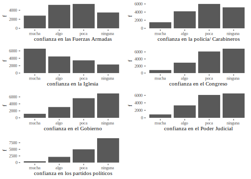
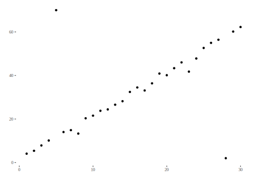
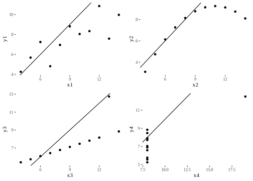
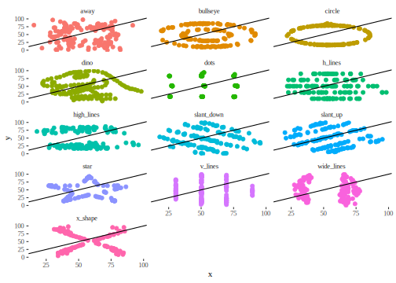

Capítulo 5 Relación entre variables: el análisis
En el capítulo anterior hemos tratado la relación entre dos variables en escalas nominales, y señalamos que si se trata de variables de nivel superior es posible crear categorías y tratarlas del mismo modo. En cuanto a la medida de la intensidad de la relación, nos hemos limitado al caso de dos variables dicotómicas, es decir, con dos categorías en cada una, con lo que la tabla resultante es de dos por dos y calculamos el coeficiente Q de Kendall - Yule. Ahora se amplía el dominio de nuestro análisis, incorporando herramientas que permiten poner a prueba la hipotética relación entre dos variables de nivel nominal con más de dos categorías cada una y variables de nivel superior (ordinales y métricas).
5.1 Relaciones entre variables vs. comparación de grupos
Según el contexto en que se aplique y también según el modo en que se formulan las preguntas, los resultados de los procedimientos estadísticos que veremos a continuación pueden interpretarse de diferente manera. Tomemos como ejemplo el caso que interese observar la relación del tipo de violencia26 con el lugar donde sucede, que se analizará más adelante. Aunque son estadísticamente equivalentes, no es lo mismo preguntar si “el lugar incide sobre el tipo de violencia”, o si “el tipo de violencia difiere según el lugar”. Aquí es más pertinente el planteo del problema como una comparación de grupos (que quedan definidos por los diferentes lugares) antes que como una relación entre variables. Lo mismo pasa cuando se comparan los resultados de un examen entre quienes cursan por la tarde o la mañana. Cuando hay control de variables, como en el diseño experimental o en la evaluación de impacto, el paralelismo entre las dos lecturas es más cercano. Así, preguntar si un grupo de deportistas que recibió un suplemento en su dieta, tiene mejor rendimiento que uno que no lo recibió (planteo en términos de comparación de grupos), equivale a preguntar si el suplemento dietario incide sobre el rendimiento (planteo en términos de relación entre variables). Las operaciones estadísticas que responden a las dos preguntas son las mismas, pero según el caso, una manera de formular el problema puede ser más adecuada que otra, así como la lectura del resultado.
Por ejemplo, cuando se busca evaluar el impacto de una política pública dirigida a reducir enfermedades parasitarias en menores de edad, una estrategia consiste en comparar la prevalencia de esas enfermedades entre población que fue destinataria de esa política, y población que no lo fue. Esta prevalencia es la “variable de salida” o “de respuesta” y es aquello sobre lo cual la política pretende impactar. La pregunta por la diferencia entre los dos grupos equivale a indagar sobre el efecto de la intervención.
La investigación social apela continuamente a las comparaciones: el pasado y el presente, mujeres y varones, sociedades industriales y agrarias (Pescosolido and Kelley 1983), grupos minoritarios y población general, por eso es necesario contar con herramientas que permitan analizar la manera en que suceden estas diferencias y las relaciones entre variables que se asocian a ellas.
5.2 Variables nominales
Sobre el final del capítulo anterior presentamos el concepto de independencia estadística y vimos la manera de calcular las frecuencias de las celdas que se esperarían encontrar si las variables fueran independientes. Para hacer esto es suficiente multiplicar las frecuencias marginales correspondientes a cada celda y dividir el resultado por el total de casos. Para el ejemplo de las diferencias en el tipo de violencia según área geográfica, una muestra de 500 casos provee la siguiente distribución conjunta:
| áreas rurales | ciudades grandes | ciudades pequeñas | Total | |
|---|---|---|---|---|
| autoinfligida | 15 | 100 | 35 | 150 |
| colectiva | 5 | 35 | 10 | 50 |
| interpersonal | 90 | 110 | 100 | 300 |
| Total | 110 | 245 | 145 | 500 |
Una primera aproximación consiste en calcular frecuencias relativas. Dado que nuestro interés está en comparar el tipo de violencia según las áreas, calcularemos los porcentajes según las columnas de la tabla 5.1 y resulta:
| áreas rurales | ciudades grandes | ciudades pequeñas | Total | |
|---|---|---|---|---|
| autoinfligida | 13.6 | 40.8 | 24.1 | 30 |
| colectiva | 4.5 | 14.3 | 6.9 | 10 |
| interpersonal | 81.8 | 44.9 | 69.0 | 60 |
| Total | 100.0 | 100.0 | 100.0 | 100 |
Si no consideramos el área, se ve (en la columna de los totales) que la violencia interpersonal es la más frecuente (60%), seguida de la
autoinfligida con el 30%. Este patrón de distribución en las distintas
formas de violencia se mantiene en las diferentes áreas, pero en más
acentuado en las rurales, donde la categoría modal (que sigue siendo
interpersonal) alcanza el 82% del total del área. Por el contrario, la
violencia autoinfligida, que es el 30% del total, sube al 41% en grandes
ciudades y solo representa el 14% de las formas de violencia que se
observan en áreas rurales. Así, parecería que hay diferencia en la
distribución de los tipos de violencia según las áreas que están
considerándose.
Buscaremos ahora de cuantificar la intensidad de esa relación, para lo que nos preguntaremos cuáles serían las frecuencias de las celdas si el tipo de violencia fuera independiente del área donde sucede, es decir, si se observara la misma proporción de los distintos tipos de violencia en todas las áreas. Usemos el concepto de independencia estadística para calcular las frecuencias esperadas correspondientes a la tabla 5.1.
| áreas rurales | ciudades grandes | ciudades pequeñas | Total | |
|---|---|---|---|---|
| autoinfligida | 33 | 74 | 44 | 151 |
| colectiva | 11 | 24 | 14 | 49 |
| interpersonal | 66 | 147 | 87 | 300 |
| Total | 110 | 245 | 145 | 500 |
Estas frecuencias están calculadas como indicamos en el capítulo anterior, haciendo:
\[f_{ij}^{e} = \frac{f_{i}*f_{j}}{n}\]
Por ejemplo, la frecuencia de la celda 1,2 resultó de \(f_{1 2}^{e} = \frac{151*245}{500} = 73.99\) que redondeamos a 74.
La tabla 5.3 muestra las frecuencias que esperaríamos encontrar si no hubiera relación entre las variables, es decir, si éstas fueran independientes. A ellas debemos compararlas con las que realmente hemos encontrado; las que se denominan frecuencias observadas.
Si halláramos que nuestras frecuencias observadas son muy similares a
las que se esperan bajo la hipótesis de independencia, diríamos que las variables “están cerca” de ser independientes, o lo que es equivalente, que habría escasa relación entre ellas, . Por el contrario, si las frecuencias observadas fueran muy diferentes de las esperadas, creeríamos que las variables “están lejos” de ser independientes, es decir, que habría alguna relación entre ellas. Para decidir, debemos comparar la tabla 5.1 con la 5.3.
Una opción para medir la distancia entre los dos conjuntos de frecuencias es la de restar las correspondientes de cada celda; pero si hacemos eso nos encontraremos con un problema parecido al que tuvimos cuando intentamos observar la dispersión restando los valores de la media: la suma da cero. Por única vez realizaremos esta operación de manera manual para verificar el resultado:
\[(15 - 33) + (100 - 74) + (35 - 44) + (5 - 11) + (35 - 24) + (10 - 14) + (90 - 66) +\] \[(110 - 147) + (100 - 87) = 0\]
Obtenemos este resultado porque las frecuencias marginales son fijas y lo que una celda tiene de más, lo tiene otra de menos. Siempre sucederá así y por esa razón, no podemos saber si las observadas están cerca o lejos de las esperadas con el procedimiento directo de restarlas. Por el contrario, para medir la distancia entre los dos conjuntos de frecuencias (observadas y esperadas) se usa la siguiente expresión:
\[\sum_{i=1; j=1}^{i=f; j=c}{\frac{(f_{ij}^o - f_{ij}^e)^2}{f_{ij}^e}}\]
La expresión nos dice que deben restarse cada una de las frecuencias esperadas de cada observada correspondiente, elevar esa diferencia al cuadrado27 y dividir el resultado por cada una de las frecuencias esperadas. Los subíndices mantienen la notación del capítulo anterior: \(i\) es el índice de filas, que va desde la primera (\(i=1\)) hasta la última (\(f\) es el número total de filas); \(j\) es el índice de las columnas, que también empieza en 1 (\(j=1\)) y termina en \(c\), que es el número total de columnas28. Vamos a aplicarla una vez, solo para ver su funcionamiento, luego la pediremos al programa:
\[\frac{(15 - 33)^{2}}{33} +\frac{(100 - 74)^{2}}{74} + \frac{(35 - 44)^{2}}{44} + \frac{(5 - 11)^{2}}{11} + \frac{(35 - 24)^{2}}{24} + \frac{(10 - 14)^{2}}{14} +\] \[\frac{(90 - 66)^{2}}{66} + \frac{(110 - 147)^{2}}{147} + \frac{(100 - 87)^{2}}{87} = 50.18\]
El número que resulta de esta operación se llama puntaje chi cuadrado (o también ji cuadrado), se indica con el símbolo \(\chi^{2}\) y es una
medida de la distancia a la que se encuentran las frecuencias observadas de las que se esperaría encontrar si las variables fueran
independientes.
El puntaje \(\chi^{2}\) no puede ser negativo, ya que proviene de la suma de números elevados al cuadrado. Solo puede ser cero si todos los términos de la suma son cero, es decir, si cada frecuencia observada es exactamente igual a la esperada correspondiente. En ese caso no habría duda en decir que las variables son independientes, cumplirían exactamente con la definición de independencia estadística.
El puntaje \(\chi^{2}\) indica si las frecuencias observadas están cerca o lejos de las esperadas, pero ¿qué tan grande debe ser para que consideremos lejanas a las frecuencias?
Dos problemas que tiene este puntaje son:
- puede ser indefinidamente grande
- su valor depende del número de casos que se evalúan y de la dimensión de la tabla.
Así, por ejemplo, si multiplicamos por 10 todas las frecuencias de la tabla 5.1, obtenemos:
| áreas rurales | ciudades grandes | ciudades pequeñas | Total | |
|---|---|---|---|---|
| autoinfligida | 150 | 1000 | 350 | 1500 |
| colectiva | 50 | 350 | 100 | 500 |
| interpersonal | 900 | 1100 | 1000 | 3000 |
| Total | 1100 | 2450 | 1450 | 5000 |
Aunque los valores absolutos son diez veces más grandes, no hubo cambios en las frecuencias relativas, por ejemplo, en la celda 1,1: \(\frac{150}{1100} = 0,14\ (14\%)\) lo mismo que había dado esa celda en la tabla original. Cualquiera sea la intensidad de la relación entre estas dos variables, ésta no ha cambiado porque hayamos multiplicado todo por 10, sin embargo, si calculamos el puntaje \(\chi^{2}\) en la tabla 5 obtenemos 501.9, es decir un número 10 veces más grande. Entonces el puntaje \(\chi^{2}\) puede cambiar muy ampliamente sin que cambien las frecuencias relativas; esto nos dice que este puntaje no mide de manera directa la asociación entre dos variables, por ello:
| Para comparar la intensidad de la asociación, el puntaje \(\chi^{2}\) solo en válido si las tablas tienen la misma dimensión y el mismo número de casos. |
5.2.1 Coeficientes de asociación para variables nominales
Para medir la asociación, debe eliminarse el efecto de la cantidad de
casos y también de la dimensión de la tabla. Calcularemos tres
coeficientes que nos permitan evaluar el grado o intensidad de la
relación y que tengan un límite superior de modo que podamos juzgarlos como elevados o bajos.
El primero de ellos es el coeficiente \(\varphi\)29, válido para medir la asociación entre dos variables dicotómicas (o binarias), se calcula como:
\[\varphi = \sqrt{\frac{\chi^{2}}{n}}\]
Vale cero si las variables son independientes e indica mayor asociación cuando está más cerca de uno.
Ejemplo (datos ficticios): en el análisis de la calidad de ítems de un examen, se observa las veces que una pregunta es correctamente
respondida por quienes aprobaron el examen y por quienes no lo aprobaron. Para el caso de una pregunta a la que se llama #7745, que fue respondida por 100 personas (a quienes les tocó por azar), la
información se presenta en una tabla de \(2 \times 2\):
| correcta | incorrecta | Total | |
|---|---|---|---|
| aprobó | 50 | 15 | 65 |
| no aprobó | 10 | 25 | 35 |
| Total | 60 | 40 | 100 |
Para la que el puntaje \(\chi^{2}\) vale 22.16, y el coeficiente resulta en:
\[\varphi = \sqrt{\frac{22.16}{100}} = 0.47\]
Como el cálculo del puntaje \(\chi^{2}\) es engorroso para hacer manualmente, existe una expresión alternativa para obtener el coeficiente \(\varphi\) cuando las tablas son de dos por dos, que solo usa las frecuencias observadas en la tabla. Si estas son:
| a | b |
|---|---|
| c | d |
La fórmula de cálculo del coeficiente \(\varphi\) es:
\[\varphi = \frac{(c*b) - (a*d)}{\sqrt{(a + b)*(c + d)*(a + c)*(b + d)}}\]
Aplicado a los datos del ejemplo da:
\[\varphi = \frac{(10*15) - (50*25)}{\sqrt{(50 + 15)*(10 + 25)*(50 + 10)*(15 + 25)}} = \frac{1100}{2337} = 0.47\]
Otra forma de medir la asociación entre dos variables, cuando alguna de ellas o las dos, tienen más de dos categorías, es el coeficiente de contingencia, C de Pearson, se calcula del siguiente modo a partir del puntaje \(\chi^{2}\):
\[C = \sqrt{\frac{\chi^{2}}{\chi^{2} + n}}\]
Al igual que \(\varphi\), este coeficiente no puede ser menor que cero (0) y solo toma ese valor si las variables son independientes (es decir cuando \(\chi^{2} = 0\)). Tampoco puede ser mayor que uno (1), pero su valor máximo depende de la dimensión de la tabla.
Solo en el caso particular en que la tabla sea cuadrada (misma cantidad de filas que de columnas), el valor máximo del coeficiente es: \(C_{\max} = \sqrt{\frac{f - 1}{f}}\) , o lo que es lo mismo :
\(C_{\max} = \sqrt{\frac{c - 1}{c}}\)
Porque nos referimos a tablas cuadradas, en las que \(f=c\).
Si la tabla no es cuadrada, sino de dimensión \(f X c\), el valor máximo es:
\[C_{\max} = \sqrt{\frac{\min(f,c) - 1}{min(f,c)}}\]
En la que \(min(f,c)\) es el más chico de los dos números \(f\) o \(c\).
De este modo se obtiene un coeficiente que indica el grado de la
asociación entre dos variables que es apto para tablas de cualquier dimensión, no solo para las de \(2 \times 2\), por lo que mejora lo que mide el coeficiente Q de Kendall - Yule. Reemplacemos los valores para el ejemplo de los tipos de violencia:
\[C = \sqrt{\frac{\chi^{2}}{\chi^{2} + n}} = \sqrt{\frac{50.19}{50.19 + 500}} = 0.30\]
Para decidir si este resultado es alto o bajo, es decir, si la relación es fuerte o débil, calculemos el máximo que podría haber alcanzado para una tabla de 3X3:
\[C_{\max} = \sqrt{\frac{f - 1}{f}} = \sqrt{\frac{3 - 1}{3}} = \sqrt{\frac{2}{3}} = 0.82\]
Entonces el valor que hemos encontrado es moderado, y nos indica que la relación entre el tipo de violencia y el tamaño de las ciudades no es intensa.
El tercer (y último) coeficiente que calcularemos para variables
nominales está también basado en el puntaje \(\chi^{2}\) y tiene un valor máximo de 1 (uno). Se llama coeficiente V de Cramer y se calcula así:
\[V = \sqrt{\frac{\chi^{2}}{n*min(f - 1, c - 1)}}\]
La expresión \(min(f-1, c-1)\), tiene el mismo significado que en \(C_{max}\); es mínimo entre el número de filas menos uno y el número de columnas menos uno. Para obtenerlo, se resta 1 al número de filas, luego se resta 1 al número de columnas y se elige el menor de los dos. Si la tabla es de \(3 \times 2\) se hace \(3 - 1 = 2\) y \(2 - 1 = 1\), entre 2 y 1 el mínimo es 1 y ése es el número que ubicamos en el denominador, multiplicando a \(n\). En este ejemplo, las filas y las columnas son tres, por lo que se toma el mínimo entre \(3-1\) y \(3-1\), el resultado es 2, y el coeficiente V de Cramer resulta:
\[V = \sqrt{\frac{\chi^{2}}{n*min(f - 1,c - 1)}} = \sqrt{\frac{50.19}{500*min(3 - 1,\ 3 - 1)}} = \sqrt{\frac{50.19}{500*2}} = 0.22\]
Como el valor máximo que puede alcanzar este coeficiente es 1 (uno), en este caso se trata de una relación moderada entre las dos variables.
5.3 Variables de nivel ordinal
Si nuestro problema es el de describir la relación entre variables cuyas
categorías están ordenadas, es decir variables ordinales, los
coeficientes anteriores son válidos: pero como sucedió con las medidas
descriptivas, el mayor nivel de medición permite calcular coeficientes
más elaborados y que, por esa razón, informen más acerca de la relación
entre las variables que se analizan. Un punto a tener en cuenta es que
cuando se trata con dos variables, la del menor nivel de medición es la
que manda. Así, para relacionar una ordinal y una nominal, debe usarse
un coeficiente \(V\) o \(C\), como si fueran las dos nominales.
Si las dos variables son ordinales o si una es ordinal y la otra
intervalar o proporcional, es posible calcular un coeficiente que tiene
en cuenta los “rangos” es decir la posición de cada categoría respecto
de las demás, su carácter de primera, segunda, etc., es decir, el orden.
Sea el problema de indagar por la relación que podría haber entre el
resultado que se obtiene al rendir un examen de ingreso a una
carrera y el nivel de educación de las madres de quienes rinden, consideraremos como
variables el nivel máximo de educación de la madre de cada estudiante y el orden de mérito alcanzado en el ingreso a esa carrera; ambas variables
son ordinales. Tratemos solo la situación de pocos casos por ahora. Si
para el orden de mérito codificamos como 1, 2, 3, …, el primer lugar en el
ingreso, el segundo, etc. y para la educación de la madre usamos 1 =
universitario completo, 2 = universitario incompleto, etc., entonces el
fragmento de la matriz de datos para 8 observaciones tendría una forma
como esta:
| OM | educamadre |
|---|---|
| 1 | 2 |
| 2 | 2 |
| 3 | 3 |
| 4 | 2 |
| 5 | 3 |
| 6 | 4 |
| 7 | 5 |
| 8 | 3 |
Que está ordenada según los valores de la primera variable (orden de mérito). A estos datos no conviene presentarlos en una tabla de doble entrada, porque cada orden de mérito corresponde a un único caso, por lo que resultaría una tabla tan poco resumida como la siguiente:
| 2 | 3 | 4 | 5 |
|---|---|---|---|
| 1 | 0 | 0 | 0 |
| 1 | 0 | 0 | 0 |
| 0 | 1 | 0 | 0 |
| 1 | 0 | 0 | 0 |
| 0 | 1 | 0 | 0 |
| 0 | 0 | 1 | 0 |
| 0 | 0 | 0 | 1 |
| 0 | 1 | 0 | 0 |
Esta tabla no es útil, ya que tiene tantas filas como la matriz de datos (porque cada orden de mérito corresponde a una sola persona), hay solo un caso en cada celda no vacía y hay muchas celdas vacías (con frecuencia cero). Por eso, cuando se trata de variables de este nivel de medición, no se usan tablas de doble entrada para representar los datos, solo se calcula un coeficiente que indique la intensidad de la relación. Este coeficiente se llama coeficiente de correlación por rangos, de Spearman y para calcularlo hay que transformar los valores de las variables en rangos, de mayor a menor, de manera que al máximo valor de cada variable corresponda el 1, al siguiente el 2 y así sucesivamente.
En nuestro ejemplo, el orden de mérito ya está en rangos, uno para el
primero, dos para el segundo y un rango para cada persona. No es así
para el nivel de educación, ya que varias personas pueden tener el
mismo, a esta variable la transformaremos en rangos. El mayor nivel de
educación observado es 2 (universitario incompleto) a ese valor le
correspondería el rango 1 (uno), pero hay tres madres con ese nivel de
educación, ellas deberían llevar los rangos 1, 2 y 3, como están
empatadas, les asignamos a todas el promedio de los tres rangos: 2.
Luego sigue el nivel de educación 3 (secundario completo) a quien
deberíamos asignar el rango 4, pero acá también hay empate entre tres
casos, corresponderían los rangos 4, 5 y 6, nuevamente usamos el
promedio de los tres rangos para asignar a los tres el mismo: 5. Sigue
el nivel 4 (secundario incompleto), al que asignamos el rango siguiente:
7, ya que hay solo un caso aquí; y lo mismo pasa con el nivel 5
(primario completo) al que le toca rango 8.
Resumiendo entonces, la transformación de los valores de las variables
en rangos resulta así:
| Orden de mérito en el ingreso | Rango del orden de mérito | Educación de la madre | Rango de la educación de la madre |
|---|---|---|---|
| 1 | 1 | 2 | 2 |
| 2 | 2 | 2 | 2 |
| 3 | 3 | 3 | 5 |
| 4 | 4 | 2 | 2 |
| 5 | 5 | 3 | 5 |
| 6 | 6 | 4 | 7 |
| 7 | 7 | 5 | 8 |
| 8 | 8 | 3 | 5 |
No ha sido necesario transformar los valores del orden de mérito, porque ya correspondían uno a cada persona.
Una vez construidos los rangos, se observa, para cada caso la diferencia
entre el rango de una variable y de la otra, esas diferencias se
llamarán \(d\).
| Rango del orden de mérito | Rango de la educación de la madre | \(d\) |
|---|---|---|
| 1 | 2 | -1 |
| 2 | 2 | 0 |
| 3 | 5 | -2 |
| 4 | 2 | 2 |
| 5 | 5 | 0 |
| 6 | 7 | -1 |
| 7 | 8 | -1 |
| 8 | 5 | 3 |
Estas diferencias indican la distancia que hay entre los dos
ordenamientos, si fueran ambos iguales (si el máximo de uno coincidiera
con el máximo del otro y así en todas las categorías), tendríamos una
asociación perfecta entre las dos variables. Por el contrario si el
orden estuviese exactamente invertido (si el rango máximo de una
variable coincidiera con el rango mínimo de la otra y así en las demás)
la relación también sería perfecta, pero inversa.
La intensidad de la relación se mide entonces con el que hemos llamado
coeficiente de Spearman, la expresión de su cálculo es la siguiente:
\[r_{s} = 1 - \frac{6*\sum_{i = 1}^{n}d_{i}^{2}}{n^{3} - n}\]
En la que:
- \(d_{i}\) son las diferencias de rangos (calculadas en la última columna de la tabla de arriba) que en la fórmula van elevadas al cuadrado.
- La sumatoria indica que ésta va desde la primera de las diferencias (\(i=1\)) hasta la última (\(n\)).
- \(n\) es el número total de observaciones.
Este coeficiente puede ser positivo o negativo y tiene un campo de variación igual al del Q de Kendall - Yule, es decir, entre \(-1\) y 1, es decir:
\[- 1 \leq r_{s} \leq 1\]
Al igual que el coeficiente de Kendall - Yule, los valores próximos a 1 ó a \(-1\) se interpretan como propios de una asociación fuerte (intensa) y
los cercanos a 0 (cero), sean positivos o negativos, corresponden a
asociaciones débiles. Si un coeficiente vale 1 ó \(-1\) diremos que la
asociación es perfecta, pero eso no es algo que suceda en la realidad,
del mismo modo que si el coeficiente fuera exactamente 0 (cero), la
asociación sería nula y otra vez es muy poco común que eso suceda con
datos reales.
A diferencia de los coeficientes usados para variables nominales, ahora
el signo importa: cuando es positivo da cuenta de una relación directa
entre las dos variables, una relación en la que cuando una aumenta, la
otra también lo hace. Si el coeficiente es negativo indica relación
inversa, el crecimiento de una variable se acompaña del decrecimiento de
la otra. En este nivel de medición (ordinal) podemos hacer estos
juicios, podemos decir “aumenta” o “disminuye”, porque las categorías
están ordenadas, por esa razón podemos analizar no solo la intensidad de
la relación, sino también si se trata de una relación directa o inversa.
Se trata de dos características independientes de cada relación: puede
ser fuerte y directa; o fuerte e inversa; o bien débil y directa; o
débil e inversa. Un error muy frecuente es creer que si el coeficiente
es negativo, la relación es débil, no es así. Es débil si el coeficiente
es cercano a 0 (cero), es igualmente débil si \(r_s=0.03\) como si
\(r_s=-0.03\), el signo del coeficiente no aporta para saber si es fuerte
o débil. Del mismo modo, es igual de fuerte una relación en la que
\(r_s=0.96\) como una en la que \(r_s=-0.96\).
Para obtener el valor del coeficiente en nuestro ejemplo, vamos primero
a calcular las \({d_{i}}^{2}\):
| Rango del orden de mérito | Rango de la educación de la madre | \(d\) | \(d_i^2\) |
|---|---|---|---|
| 1 | 2 | -1 | 1 |
| 2 | 2 | 0 | 0 |
| 3 | 5 | -2 | 4 |
| 4 | 2 | 2 | 4 |
| 5 | 5 | 0 | 0 |
| 6 | 7 | -1 | 1 |
| 7 | 8 | -1 | 1 |
| 8 | 5 | 3 | 9 |
Por lo que la suma de la última columna es 20. Al reemplazar los valores en la expresión de \(r_s\), obtenemos:
\[r_{s} = 1 - \frac{6*\sum_{i = 1}^{n}d_{i}^{2}}{n^{3} - n} = 1 - \frac{6*20}{8^{3} - 8} = 1 - \frac{120}{512 - 8} = 1 - \frac{120}{504} = 0.76\]
Este valor de \(r_{s} = 0.76\), indica una asociación intensa y positiva
entre la educación de la madre y los resultados del ingreso a la
universidad. Que sea positiva quiere decir que estudiantes con madres de
mayor educación obtienen mejores resultados en el ingreso a esa carrera.
Como ya hemos señalado, esto no quiere decir causalidad, no significa
que la causa del resultado en el ingreso sea la educación de la madre.
El problema de la causalidad es teórico y depende del análisis que se
hace de las relaciones entre los conceptos, en este ejemplo, la
educación de la madre es uno de muchos de los factores
interrelacionados, que inciden sobre el resultado que obtiene en el examen de ingreso.
Este coeficiente (como sucede con todos los coeficientes de asociación)
no revelan la causalidad sino cuán frecuente resulta que los cambios
de una variable se vean acompañados de cambios en la otra.
Para ilustrar con otros ejemplos de relaciones entre variables
ordinales, consideremos el caso de poner en correspondencia el ranking de temas
musicales de una semana con la frecuencia con que cada tema es
reproducido en la radio, esperamos hallar que la relación sea muy fuerte
y directa: los temas de mayor posición en el ranking son también los que
más frecuentemente se pasan en la radio. Al revés, en la relación entre
el rating de los programas de televisión y el contenido cultural que
ofrecen esperamos una relación también fuerte, pero ahora inversa: los
de mayor rating son habitualmente lo que menos contenido cultural
tienen.
Este coeficiente es adecuado, no solo cuando las variables son ordinales, sino cuando son cuantitativas (intervalares o proporcionales) y existen casos atípicos, que afectarían el cálculo de otro coeficiente que se verá a continuación. Se dice que este coeficiente es “robusto”, para indicar que se ve poco afectado cuando no se cumplen supuestos sobre las variables cuya relación se analiza. Para que la interpretación del coeficiente de Spearman sea correcta, es necesario de las variables guarden entre sí una relación directa o inversa, en todo su conjunto de valores, es decir, que la relación sea monótona creciente o decreciente.
5.4 Nivel intervalar o proporcional
Si tratamos con variables intervalares o proporcionales, podríamos usar los procedimientos que referimos antes para el cálculo de la intensidad de las relaciones entre variables nominales. Para ello, deberíamos construir intervalos y tratarlos como las categorías de las dos variables, sin embargo, al operar de ese modo, perderíamos la información que provee una variable cuantitativa. Por ejemplo, si disponemos de un conjunto de personas adultas de las que sabemos la edad a la que cada una se casó (o unió) por primera vez y los años de escolarización, y nos interesamos por la relación entre estas dos variables; una opción sería la de categorizar ambas variables, por ejemplo, en tres intervalos. La matriz de datos para estas dos variables en 13 casos es:
| edad.union | escolarizacion | edad.union.3 | escolariz.3 |
|---|---|---|---|
| 18 | 10.0 | (17,23] | (9.99,13.3] |
| 17 | 12.0 | (17,23] | (9.99,13.3] |
| 25 | 10.5 | (23,29] | (9.99,13.3] |
| 19 | 11.5 | (17,23] | (9.99,13.3] |
| 23 | 18.0 | (17,23] | (16.7,20] |
| 20 | 14.0 | (17,23] | (13.3,16.7] |
| 18 | 15.5 | (17,23] | (13.3,16.7] |
| 20 | 12.0 | (17,23] | (9.99,13.3] |
| 24 | 13.0 | (23,29] | (9.99,13.3] |
| 24 | 15.0 | (23,29] | (13.3,16.7] |
| 26 | 16.0 | (23,29] | (13.3,16.7] |
| 30 | 18.0 | (29,35] | (16.7,20] |
| 35 | 20.0 | (29,35] | (16.7,20] |
Si se intenta construir una tabla de doble entrada para las dos variables originales (las dos primeras columnas de la matriz de datos anterior), el problema es aún mayor que con las ordinales, dado que habría un gran número de filas y de columnas, y resultaría casi imposible de leer. Además, muchas celdas estarían vacías y habría muy pocos casos en cada una de las restantes. Los trece datos de la matriz anterior quedarán, en una tabla de doble entrada, así:
| 10 | 10.5 | 11.5 | 12 | 13 | 14 | 15 | 15.5 | 16 | 18 | 20 | |
|---|---|---|---|---|---|---|---|---|---|---|---|
| 17 | 0 | 0 | 0 | 1 | 0 | 0 | 0 | 0 | 0 | 0 | 0 |
| 18 | 1 | 0 | 0 | 0 | 0 | 0 | 0 | 1 | 0 | 0 | 0 |
| 19 | 0 | 0 | 1 | 0 | 0 | 0 | 0 | 0 | 0 | 0 | 0 |
| 20 | 0 | 0 | 0 | 1 | 0 | 1 | 0 | 0 | 0 | 0 | 0 |
| 23 | 0 | 0 | 0 | 0 | 0 | 0 | 0 | 0 | 0 | 1 | 0 |
| 24 | 0 | 0 | 0 | 0 | 1 | 0 | 1 | 0 | 0 | 0 | 0 |
| 25 | 0 | 1 | 0 | 0 | 0 | 0 | 0 | 0 | 0 | 0 | 0 |
| 26 | 0 | 0 | 0 | 0 | 0 | 0 | 0 | 0 | 1 | 0 | 0 |
| 30 | 0 | 0 | 0 | 0 | 0 | 0 | 0 | 0 | 0 | 1 | 0 |
| 35 | 0 | 0 | 0 | 0 | 0 | 0 | 0 | 0 | 0 | 0 | 1 |
Tal como sucedió con las variables ordinales, esta no es una tabla adecuada para representar estos datos y sería más legible con las categorías agrupadas (usando las columnas tres y cuatro de la matriz):
| (9.99,13.3] | (13.3,16.7] | (16.7,20] | |
|---|---|---|---|
| (17,23] | 4 | 2 | 1 |
| (23,29] | 2 | 2 | 0 |
| (29,35] | 0 | 0 | 2 |
Ahora la tabla se lee con más facilidad y podemos tratarla como hicimos antes, como si fueran dos variables nominales y calcular un puntaje chi cuadrado y coeficientes C de Pearson y V de Cramer, o bien, como los intervalos están ordenados, poner una ranking y calcular el coeficiente de Spearman. Sin embargo, al hacer esto, se trata como si se hubiesen unido a la misma edad todas las personas que están entre 18 y 23.7 años. Del mismo modo, se trata como iguales a quienes tienen escolariación entre 10 y 13 años, no se puede distinguir entre quienes estudiaron 11, 12, 13 años: al interior del intervalo todos son considerados iguales. Además de esto, se pierden las posibilidades de análisis que ofrecen las variables cuantitativas.
Para poder mantener las variables con sus verdaderos valores (sin
agrupar) y tener al mismo tiempo una representación abreviada de los
datos, existe un recurso muy valioso: una representación gráfica de los valores que se denomina diagrama de dispersión que se muestra en la figura siguiente (5.1).
Figura 5.1: Diagrama de dispersión de los años de escolarización y la edad a la que se realizó la primera unión conyugal
Este gráfico usa los ejes cartesianos para indicar los valores de las
dos variables que estamos analizando y representa con un punto cada
concordancia de dos categorías que puede corresponder a un caso o a
varios. Cada punto es un par ordenado: el primer número son los años de escolarización y el segundo la edad a la que se unió por primera vez. Los ceros de la tabla 5.9 ya no aparecen en este diagrama. El primer punto de la izquierda corresponde a alguien que alcanzó 10 años de escolarización y se unió a los 18 años de edad.
Lo que eran filas y columnas en todas las tablas mostradas hasta aquí, son ahora ejes coordenados, porque ya no se trata con categorías
separadas de cada variable sino con valores cuantitativos de las
variables que ahora son intervalares o proporcionales. Estos ejes se
llaman ordenadas el vertical y abscisas el horizontal. En el
ejemplo están representados los valores de los años de escolarización en el eje de las abscisas (primer elemento de cada par ordenado) y la edad a la primera unión en el eje de las ordenadas (segundo elemento de cada par).
La manera en que los puntos se distribuyen en el diagrama de dispersión nos da una primera aproximación a la relación entre las dos variables.
Así, en el caso del ejemplo, hay una cierta tendencia creciente, en la
que se vería que globalmente, las personas con más años de
escolarización tenderían a unirse más tardíamente. Esta observación es
equivalente a ver la concentración de casos en las celdas de la diagonal
de una tabla bivariada.
Por el contrario, si los datos se dispersan como lo muestra 5.2.
Figura 5.2: Diagrama de dispersión de los años de escolarización y la edad a la que se realizó la primera unión conyugal (relación débil)
No hay ninguna razón para creer que las variables estén relacionadas:
los puntos no muestran una tendencia clara.
Una asociación más acentuada entre las mismas dos variables se observa en el diagrama de dispersión de 5.3.

Figura 5.3: Diagrama de dispersión de los años de escolarización y la edad a la que se realizó la primera unión conyugal (relación intensa)
En el que la tendencia lineal es más clara, por lo que resulta más
definido el efecto de la escolarización sobre la edad a la que se
produce la primera unión. Aquí, la nube de puntos está más aplanada que en el ejemplo anterior; en efecto, en el gráfico 5.2 la nube de puntos tiene forma más circular que en el 5.3, donde es más elíptica.
El ejemplo que hemos mostrado hasta aquí corresponde a una relación directa: más años de escolarización parecen asociarse con edades más tardías para la primera unión. De manera equivalente pueden representarse relaciones inversas. Consideremos el caso de la ansiedad frente a los exámenes y la calificación que se obtiene. En un estudio realizado por el Laboratorio de Evaluación Psicológica y Educativa (LEPE, Facultad de Psicología UNC, Furlan, Ferrero, and Gallart (2014)) se observó que a mayor puntaje en una prueba de ansiedad ante los exámenes, menor rendimiento académico, por lo que la relación entre las variables es inversa.
Los esquemas de la figura 5.4 muestran el achatamiento de la nube de puntos según la relación sea más fuerte o más débil y según sea directa o inversa.
Figura 5.4: Comparación de la forma de las nubes de puntos según la intensidad de la relación
La intensidad de la relación está vinculada al achatamiento de la elipse que rodea la nube de puntos y éste al grado de alineación que los puntos tengan. Luego volveremos sobre esta idea.
Solo nos ocuparemos de relaciones como las que acabamos de ejemplificar: aquellas en las que la tendencia es creciente o decreciente, pero siempre siguiendo un camino parecido a una línea recta. Son las que llamaremos relaciones lineales. No son la únicas que existen; para ilustrarlo, consideremos cómo se representa la relación entre la edad de las personas y la frecuencia con que consultan al médico. Estas dos variables son tales que, en términos muy generales y sin considerar situaciones específicas, para valores pequeños de la primera (en la infancia) las consultas son frecuentes, luego se reducen durante la adultez para volver a incrementarse en la vejez. Por eso el gráfico que las representa tiene una forma similar a la figura 5.5.
Figura 5.5: Diagrama de dispersión del número medio de consultas médicas anuales y la edad.
Este conjunto de puntos muestra una tendencia no lineal, eso no implica que las variables no estén relacionadas; por el contrario, la relación existe, pero no es lineal. Estos puntos, en lugar de ser aproximados por una línea recta, lo serían con una curva con forma de parábola. No nos ocuparemos aquí de relaciones no lineales. Limitaremos nuestro análisis a relaciones lineales, debido a que es muy frecuente usarlas como primera aproximación a la forma que tiene la relación entre dos variables y porque a menudo, cuando se trabaja con relaciones no lineales, es posible realizar transformaciones de las variables para lograr relaciones lineales.
Para analizar la intensidad de la relación lineal entre dos variables (ambas medidas a nivel intervalar o proporcional) calcularemos un coeficiente comparable a los que hemos visto hasta aquí, que tendrá una interpretación similar a la del coeficiente de correlación por rangos de Spearman. Este coeficiente se llama coeficiente de correlación r de Pearson, fue presentado por Pearson and Galton (1895), pero antes ya había sido mencionado por Galton (1877), es uno de los de mayor utilización cuando las variables que se analizan alcanzan el nivel de medición que autoriza su cálculo. Este coeficiente va a medir qué tan bien se puede aproximar el conjunto de puntos con una función lineal y va a depender de lo que antes llamamos el “achatamiento” de la elipse. Será grande (próximo a \(1\) ó a \(-1\)) si las variables están muy relacionadas linealmente, es decir, si la nube de puntos se elonga hacia una línea; y será pequeño (próximo a cero) si las variables guardan poca relación lineal, es decir si la nube de puntos tiene forma redondeada. Será positivo y elevado (próximo a 1) si valores pequeños de una variable están acompañados de valores pequeños de la otra y valores grandes de una siguen a valores grandes de la otra, como sucedió en el ejemplo de la relación entre escolarización y edad a la primera unión, representada en el gráfico 5.3. Será negativo y elevado (próximo a \(-1\)) si los valores grandes de una de las variables acompañan a los pequeños de la otra y viceversa, como en el caso de la relación entre ansiedad y rendimiento académico. La correlación será perfecta positiva (\(r = 1\)) si todos los puntos se ubican sobre una recta creciente:
Figura 5.6: Ejemplo de situación ideal con todas las observaciones alineadas en una recta creciente, por lo que \(r = 1\)
Y será perfecta negativa (\(r = - 1\)) si todos los puntos se ubican sobre una recta decreciente:
Figura 5.7: Ejemplo de situación ideal con todas las observaciones alineadas en una recta decreciente, por lo que \(r = - 1\)
Ambas son situaciones ideales que no se encuentran en la realidad, constituyen el límite de la intensidad que pueden alcanzar las relaciones lineales directas o inversas.
Las unidades en que se miden las variables que se relacionan pueden ser muy diferentes, en el ejemplo de ansiedad y resultado de los exámenes, la primera se puede medir en una escala de cero a cien y la segunda de cero a diez, por lo que un valor elevado de la primera sería 95 y uno elevado de la segunda, 9. Esto impide que se comparen directamente los valores grandes con los grandes y los pequeños con los pequeños. Vamos a usar un recurso que ya fue presentado: las puntuaciones z, aquellas que indican a cuántas desviaciones estándar se encuentra cada observación de la media. Son los puntajes que permiten decidir si se trata de un valor grande (muy superior a la media) o pequeño (muy inferior a la media) o intermedio (semejante a la media), sin tener unidades, por lo que permite la comparación de elementos que pueden tener cualquier unidad de medida.
Recordemos que para los valores bajos de la variable (menores a la media), el puntaje z es negativo y es positivo para los valores altos (superiores a la media). Si dos variables están correlacionadas positivamente (altos con altos y bajos con bajos), entonces sus puntajes z se corresponderán positivos con positivos y negativos con negativos.
Si para cada sujeto multiplicamos los puntajes z de las dos variables que se relacionan, obtendremos siempre un resultado positivo, ya sea porque multiplicamos dos números positivos (\(+\times+=+\)) o dos negativos (\(-\times-=+\)). Si luego sumamos esos productos para todos los sujetos obtendremos un número alto positivo.
A la inversa, si dos variables se correlacionan negativamente los productos de sus puntajes z serán negativos, porque los valores altos de una irán con los bajos de la otra (que equivale a z positivos con z negativos, y \(+\times-=-\)) y bajos con altos (que es lo mismo que z negativos con z positivos y \(-\times+=-\)). Cuando sumemos estos productos para todos los casos tendremos un número alto y negativo.
Si las variables no estuvieran correlacionadas, habría casos en el que un valor alto de una variable se acompaña de uno alto de la otra y casos en que un valor alto va seguido de uno bajo, algunos productos de z serían positivos y otros negativos y entonces, al sumarlos, obtendríamos un número bajo, que puede ser positivo o negativo, pero será cercano a cero.
Entonces el producto de las puntuaciones z ofrece un resultado que será:
alto y positivo si las variables tienen una correlación fuerte y directa
alto y negativo si la correlación es fuerte e inversa
cercano a cero si no están correlacionadas
Haciendo uso de este razonamiento, el coeficiente de correlación de Pearson se calcula como30:
\[r = \frac{\sum_{i = 1}^{n}{z_{x_{i}}*z_{y_{i}}}}{n - 1}\]
Donde \(z\) representan los desvíos estándar de las variables \(x\) e \(y\), \(n\) es el total de observaciones y los subíndices \(i\) corresponden a cada una de ellas. El signo de suma señala que ésta debe extenderse desde el primer caso (\(i=1\)) hasta el último (cuando \(i=n\)).
Como en el caso del coeficiente de Spearman, el campo de variación del coeficiente de Pearson es el intervalo \([-1, 1]\).
Para el cálculo del coeficiente de Pearson, no es necesario que las dos variables tengan las mismas unidades, porque se usan los puntajes \(z\), que carecen de unidades. No hay inconveniente en correlacionar el peso (en kilogramos) con la talla (medida en centímetros).
A continuación, se presenta un ejemplo de cómo calcular el coeficiente de correlación de Pearson para evaluar la relación entre dos variables. Las variables seleccionadas para el ejemplo son: 1) puntaje obtenido en una escala de inteligencia lógico-matemática y 2) cantidad de ejercicios correctamente realizados en una prueba de matemática. El fragmento de la matriz de datos correspondiente es el siguiente:
| puntaje.escala | ejercic.corr |
|---|---|
| 46 | 7 |
| 44 | 2 |
| 56 | 7 |
| 57 | 8 |
| 30 | 2 |
| 60 | 9 |
| 45 | 5 |
| 43 | 1 |
| 64 | 9 |
| 32 | 3 |
Una vez que se ha obtenido la media y desviación estándar de las medidas del puntaje en la escala de inteligencia lógico-matemática (\(\overline{x} = 47.7\) \(s_{x} = 11.44\)) y de cantidad de ejercicios matemáticos correctamente realizados (\(\overline{y} = 5.3\) \(s_{y} = 3.09\)), se deben convertir las observaciones brutas en puntuaciones z. Para ello se calcula la diferencia entre la puntuación bruta original y la media del grupo, y el resultado de esta operación se divide por la desviación estándar del grupo. La transformación a puntaje z se obtiene como vimos antes:
Para el puntaje en inteligencia lógico - matemática (x),
\[z_{x} = \frac{x - \overline{x}}{s_{x}}\]
Para la cantidad de ejercicios correctamente realizados (y),
\[z_{y} = \frac{y - \overline{y}}{s_{y}}\]
Entonces, el puntaje z del sujeto 1 para cada escala se obtiene de la siguiente manera:
\[z_{x_{1}} = \frac{46 - 47.7}{11.44} = - 0.15\]
\[z_{y_{1}} = \frac{7 - 5.3}{3.09} = 0.55\]
Y del mismo modo para cada uno de los sujetos observados, para obtener la siguiente tabla:
| Sujetos | Puntaje escala inteligencia lógico-matemática \(z_{x}\) | Ejercicios correctamente realizados \(z_{y}\) | \(z_{x}*z_{y}\) |
|---|---|---|---|
| 1 | -0.15 | 0.55 | -0.08 |
| 2 | -0.32 | -1.07 | 0.35 |
| 3 | 0.73 | 0.55 | 0.40 |
| 4 | 0.81 | 0.87 | 0.71 |
| 5 | -1.55 | -1.07 | 1.65 |
| 6 | 1.08 | 1.20 | 1.29 |
| 7 | -0.24 | -0.10 | 0.02 |
| 8 | -0.41 | -1.39 | 0.57 |
| 9 | 1.42 | 1.20 | 1.70 |
| 10 | -1.37 | -0.74 | 1.02 |
El numerador del coeficiente r de Pearson se obtiene sumando la última columna:
\[\sum_{}^{}{z_{x}*z_{y} = 7.63}\]
y solo queda dividir este número por \(n-1=10-1=9\) para obtener \(r = 0.85\).
El coeficiente dio positivo, lo que indica que la relación es directa.
Como se habría esperado: las personas con mayor puntaje en la escala de
inteligencia lógico-matemática, son quienes tienen una mayor cantidad de
ejercicios correctamente realizados.
Además, el valor \(0.85\) es elevado, lo que indica que la relación entre
las dos variables es intensa.
La decisión acerca de considerar como grande o pequeño al valor de un coeficiente de asociación o de correlación depende del tipo de variable con que se esté trabajando y en especial de la forma en que son medidas esas variables. En buena medida, el uso de estos coeficientes es comparativo y puede ser muy valioso saber si una variable se asocia (o se correlaciona) más con una que con otra. Cuando tratamos de explicar un fenómeno y formulamos hipótesis sobre varios factores, es útil saber cuáles de ellos se asocian más intensamente con ese fenómeno.
Se han establecido algunos valores de referencia, según los cuales la correlación se considera nula si \(r < 0.10\), pequeña si \(0.10 \leq r < 0.30\), media si \(0.30 \leq r \leq 0.50\) y grande si \(r > 0.50\). Coincidimos con Cohen (1988), en que estos criterios son un tanto arbitrarios y siempre debe considerarse al coeficiente de correlación en contexto.
Para poder interpretar el coeficiente de Pearson, se requiere que las variables guarden entre sí una relación lineal, de lo contrario, la interpretación como intensidad de la relación es incorrecta. Además, este coeficiente se ve afectado por valores extremos, es decir aquellos que se apartan de la tendencia mayoritaria, por lo que si éstos existen convienen calcular el coeficiente de Spearman. Ambas situaciones, tendencia lineal o no, y existencia o no de casos atípicos pueden verse en el diagrama de dispersión, que es muy necesario observar antes de analizar la intensidad de una relación.
Cuando la relación entre dos variables es lineal, el coeficiente de
Pearson da una interpretación más detallada de la incidencia de una
variable sobre la otra. Cuando este coeficiente se eleva al cuadrado, se
obtiene un número que se llama coeficiente general de determinación,
que se indica como \(R^{2}\) y que mide la parte de la varianza que es
compartida por las dos variables.
Cuando la relación es asimétrica y una variable opera como antecedente y
la otra como consecuente, el coeficiente general de determinación mide
la parte de la varianza de la variable consecuente que se explica por la
antecedente. O bien la parte de la variabilidad de la variable
dependiente que puede atribuirse a la variable independiente. Así, en
nuestro ejemplo: \(R^{2} = {0.85}^{2} = 0.72\), lo podemos indicar como
72% y quiere decir que el 72% de la variabilidad total que aparece en el
número de ejercicios correctamente realizados, se explica por el puntaje
alcanzado en la escala de inteligencia lógico matemática. Así, con este
coeficiente identificamos la magnitud del aporte que una variable hace a
explicar los cambios de la otra. Los hechos que se observan obedecen a
una multiplicidad factores explicativos, por esa razón es muy valioso
disponer de un coeficiente como \(R^{2}\), que mide qué parte de los
cambios en lo observado pueden atribuirse a un determinado factor
explicativo.
En el apartado siguiente volveremos sobre el coeficiente general de determinación en una aplicación más general.
5.5 Dicotomías reales y artificiales
Cuando se trabaja con variables dicotómicas, estas pueden tener dos orígenes diferentes; hay dicotomías reales y las hay artificiales. Las primeras son variables que por su construcción, solo admiten dos categorías, como turno (mañana - tarde), sexo (varón - mujer), grupo (experimental - control). Las segundas, provienen de haber recategorizado una variable continua en dos grupos, como puntaje (alto - bajo), ingresos medidos según línea de pobreza (pobre - no pobre), resultado de un examen (aprobado - no aprobado), posición política (izquierda - derecha). Esta situación es especialmente interesante en la medición de rasgos latentes a los que se considera continuos, pero que se miden de manera dicotómica. Por ejemplo, la actitud hacia la política, puede ir desde el desinterés completo hasta la participación activa, pudiendo identificarse graduaciones entre esos extremos. Si se usa la afiliación a un partido como indicador de participación, se toma una medida dicotómica (está afiliado - no está afiliado); esta dicotomización se considera artificial, porque se supone que es un punto de corte que define dos categorías en un continuo. La distición entre estudiantes que promovieron y que no promovieron es una dicotomizacion sobre una variable originalmente continua: el promedio de las notas. Clasificar a los países en desarrollados y en vías de desarrollo, implica cortar en dos (dicotomizar) un conjunto de indicadores de desarrollo, que son continuos (PIB per cápita, educación, etc.). Lo cual es diferente de distinguir países con arsenal nuclear y sin arsenal nuclear, porque aquí no hay graduación entre las categorías, esta última es una dicotomía real.
Cuando se trata de dicotomías reales, el coeficiente \(\varphi\) que ya se mencionó, es adecuado. Por el contrario, en los análisis de la intensidad de la asociación entre dos variables que han sido dicotomizadas de manera artificial a partir de una variable que se considera continua, se usa una estimación del coeficiente de Pearson que habría resultado si las variables no hubieran sido dicotomizadas y hubiese entre ellas una relación lineal. El coeficiente para este caso se denomina coeficiente de correlación tetracórica, su cálculo requiere procedimientos matemáticos complejos, por lo que hay que usar programas informáticos. También hay fórmulas aproximadas, como la siguiente
\[r_{tet} = \cos(\frac{\pi}{1 + \sqrt{\frac{a*d}{b*c}}})\]
En la que a, b, c y d son las frecuencias absolutas de una tabla de \(2 \times 2\) dispuestas así:
| a | b |
|---|---|
| c | d |
El resultado de \(r_{tet}\) puede variar entre \(-1\) y 1, los valores más cercanos a 1 o a \(-1\) indican mayor intensidad en la asociación. Respecto del signo, es más claro no considerarlo en el coeficiente y observar en qué sentido se da la relación a partir de las frecuencias relativas calculadas en la tabla.
Ejemplo a partir de la base bayley: para analizar la relación entre los puntajes en las subescalas mental y motora de la prueba de Bayley, se dicotomizan las dos variables en la media, asignando el valor 0 a quienes tienen puntajes inferiores a la media en cada subescala y uno a quienes superan a la media. Resulta así la tabla:
| 0 | 1 | Total | |
|---|---|---|---|
| 0 | 139 | 102 | 241 |
| 1 | 102 | 200 | 302 |
| Total | 241 | 302 | 543 |
El cálculo del coeficiente de correlación tetracórico para esa tabla es:
\[r_{tet} = \cos(\frac{\pi}{1 + \sqrt{\frac{139*200}{102*102}}}) = \cos{(\frac{\pi}{2.63}) = 0.37}\]
Que indica una correlación moderada entre las variables. Como en este caso sí se dispone de los valores originales y la dicotomización se hizo a fines de ilustración, es posible calcularlo, su valor es \(0.35\). Pero si solo se hubiese contado con la dicotomía, el tetracórico es el único que puede calcularse.
El coeficiente de Kendall - Yule es otra aproximación al coeficiente tetracórico. En este caso da \(0.45\), que es de peor calidad que la que se obtiene con la expresión anterior.
5.6 Niveles de medición combinados
Las operaciones que pueden hacerse a un nivel de medición son también válidas para los niveles superiores, pero no a la inversa; Por eso cada vez que haya variables con niveles de medición diferente, habrá que tener en cuenta el nivel más bajo para decidir qué coeficiente corresponde usar. Por ejemplo, la correlación entre una variable ordinal y una continua debe hacerse con el coeficiente de Spearman, porque las operaciones que este requiere se puede realizar tanto con variables ordinales como con continuas. Por el contrario, el coeficiente de Pearson requiere operaciones que no son válidas cunado la variable es ordinal.
Sin embargo, hay algunos casos particulares que merecen mención.
5.6.1 Una variable dicotómica real y una proporcional
La comparación de los valores de una variable continua entre dos grupos se trata como la correlación entre una variable dicotómica real (que define los grupos) y una continua. Allí, los grupos se codifican como cero y uno, y se calcula el coeficiente de Pearson entre las dos variables.
Sin embargo, para esta situación existe un coeficiente específico, que se denomina punto biserial (\(r_{pb}\)). Su fórmula de cálculo conduce al mismo resultado que el coeficiente de Pearson, pero tiene en cuenta las medias de la variable continua y la proporción de casos en cada grupo, junto con la desviación estándar de la variable continua:
\[r_{pb} = \frac{{\overline{x}}_{1} - {\overline{x}}_{0}}{s}*\sqrt{p*(1 - p)*\frac{n}{n - 1}}\]
Donde:
\({\overline{x}}_{1}\) Es la media de la variable en el grupo codificado como uno
\({\overline{x}}_{0}\) Es la media de la variable en el grupo codificado como cero
\(p\) Es la proporción de casos que hay en grupo codificado como uno
\(n\) Es el número total de observaciones y
\(s\) Es la desviación estándar de la variable continua
El signo de este coeficiente indica el sentido de la diferencia; es positivo cuando el grupo codificado como uno tiene valores más altos y negativo en el caso contrario. Su valor absoluto mide la magnitud de la relación entre las dos variables.
Ejemplo (datos ficticios): se comparan los puntajes alcanzados en una prueba por personas asignadas a los grupos experimental y
control, y se obtienen estos valores:
| grupo | puntaje |
|---|---|
| control | 8.0 |
| control | 5.0 |
| control | 6.0 |
| control | 5.0 |
| control | 6.0 |
| control | 8.0 |
| control | 6.0 |
| experimental | 4.0 |
| experimental | 5.6 |
| experimental | 5.6 |
| experimental | 8.0 |
| experimental | 7.2 |
| experimental | 6.4 |
| experimental | 7.2 |
| experimental | 8.0 |
| experimental | 8.0 |
| experimental | 7.2 |
Se toma como grupo de referencia (grupo 1) al experimental y resulta:
\({\overline{x}}_{1} = 6.7\)
\({\overline{x}}_{0} = 6.3\)
\(p = 0.59\)
\(n = 17\)
\(s = 1.27\)
La fórmula da:
\[r_{pb} = \frac{6.7 - 6.3}{1.27}*\sqrt{0.59*(1 - 0.59)*\frac{17}{17 - 1}} = 0.1734\]
Que sea positivo indica que el grupo al que se codificó uno (el experimental) tiene puntajes medios más altos. Su valor absoluto señala una correlación pequeña entre la pertenencia a los grupos y los puntajes de la prueba.
5.6.2 Una variable continua dicotomizada y una proporcional
Si la variable dicotómica proviene de la recategorización de una continua que se dividió en dos categorías, es decir, si la dicotomía es artificial; y se supone que hay una variable latente continua, entonces el coeficiente que corresponde calcular es el llamado biserial \(r_{b}\). Como sucedió con el coeficiente de correlación tetracórico, se trata de una estimación del valor que tendría el coeficiente de Pearson si la variable no hubiese sido dicotomizada.
\[r_{b} = \frac{{\overline{x}}_{1} - {\overline{x}}_{0}}{s}*\frac{p*(1 - p)}{y}\]
Con la misma notación que se usó para el coeficiente \(r_{pb}\). Lo diferente es la \(y\) en el denominador, cuyo cálculo depende de la distribución normal, que se verá más adelante31.
5.7 Resumen de coeficientes de asociación
| Nivel de medición de las variables | Coeficiente | Rango de variación | Lectura |
|---|---|---|---|
| Ambas dicotómicas reales | \(\varphi\) (phi) de Yule | \([-1; 1]\) | No importa el signo, la relación es fuerte si es cercano a 1 ó a -1 y débil si está cerca de 0 |
| Ambas dicotómicas provenientes de dos continuas recategorizadas | tetracórico \(r_{tet}\) o bien Q de Kendall - Yule | \([-1; 1]\) | No importa el signo, la relación es fuerte si es cercano a 1 ó a -1 y débil si está cerca de 0 |
| Ambas nominales | de contingencia, C | \([0; C_{max}]\) depende de la dimensión de la tabla | Más intensa si es próximo a \(C_{max}\) |
| Ambas nominales | V de Cramer | \([0; 1]\) | Más intensa si es próximo a 1 |
| Ambas ordinales o una ordinal y una proporcional | \(r_s\) de Spearman | \([-1; 1]\) | El signo indica la dirección, positivo es directa, negativo es inversa. Fuerte si es cercano a 1 ó a \(-1\) y débil si está cerca de 0 |
| Ambas proporcionales | \(r\) de Pearson | \([-1; 1]\) | El signo indica la dirección, positivo es directa, negativo es inversa. Fuerte si es cercano a 1 ó a \(-1\) y débil si está cerca de 0 |
| Una dicotómica real y una proporcional | \(r_{pb}\) punto biserial | \([-1; 1]\) | Más intensa si es próximo a 1 o a \(-1\) |
| Una dicotómica proveniente de una continua recategorizada y otra proporcional | \(r_b\) biserial | \([-1; 1]\) | Más intensa si es próximo a 1 o a \(-1\) |
5.8 Matriz de correlaciones
A menudo resulta de interés observar grados de asociación entre más de dos variables, para ello, una disposición adecuada es la matriz de correlaciones. Se trata de una organización de las variables que se correlacionan, en filas y columnas; las variables se repiten en la primera fila y la primera columna, por lo que la matriz de correlaciones es cuadrada. La diagonal de la matriz tiene unos (1s), que indican la correlación perfecta de cada variable consigo misma. Las celdas que se encuentran por encima y por debajo de la diagonal muestran los coeficientes de correlación entre cada par de variables. Porque esos valores son idénticos, la matriz se llama simétrica.
La matriz permite advertir patrones de asociación entre variables, es decir cuáles tienden a variar de manera más semejante.
Ejemplo (datos reales): el cuestionaro de Latinobarómetro (2017) pregunta por la confianza que se tiene en diferentes instituciones, con los siguientes ítems:
Para cada uno de los grupos, instituciones o personas de la lista ¿cuánta confianza tiene usted en ellas: mucha (1), algo (2), poca (3), ninguna (4) confianza en…?
- P14STGBS.A Las Fuerzas Armadas
- P14STGBS.B La policía/ Carabineros
- P14ST.C La Iglesia
- P14ST.D Congreso
- P14ST.E Gobierno
- P14ST.F Poder Judicial
- P14ST.G Los partidos políticos
| P14STGBS.A | P14STGBS.B | P14ST.C | P14ST.D | P14ST.E | P14ST.F | P14ST.G | |
|---|---|---|---|---|---|---|---|
| P14STGBS.A | 1.00 | 0.57 | 0.19 | 0.27 | 0.34 | 0.38 | 0.26 |
| P14STGBS.B | 0.57 | 1.00 | 0.18 | 0.35 | 0.42 | 0.44 | 0.35 |
| P14ST.C | 0.19 | 0.18 | 1.00 | 0.22 | 0.16 | 0.18 | 0.14 |
| P14ST.D | 0.27 | 0.35 | 0.22 | 1.00 | 0.54 | 0.49 | 0.49 |
| P14ST.E | 0.34 | 0.42 | 0.16 | 0.54 | 1.00 | 0.55 | 0.50 |
| P14ST.F | 0.38 | 0.44 | 0.18 | 0.49 | 0.55 | 1.00 | 0.48 |
| P14ST.G | 0.26 | 0.35 | 0.14 | 0.49 | 0.50 | 0.48 | 1.00 |
Esta matriz de correlaciones muestra simultáneamente los coeficientes de correlación entre las siete variables seleccionadas. De las 49 celdas de la matriz, 7 están ocupadas con los unos de la diagonal. Las 42 restantes muestran los 21 coeficientes de correlación, repetidos por encima y por debajo de la diagonal.
El coeficiente que se pidió es el de Spearman, porque los números codifican categorías ordinales.
Esta matriz no es explicativa, no se identifican variables antecedentes y consecuentes, por eso se trata de una descripción del modo en que las respuestas a estas preguntas varían conjuntamente.
La lectura de la matriz puede empezar señalando que todos los coeficientes son positivos. Eso quiere decir que las personas que respondieron a la encuesta tomaron posición similar respecto de las diferentes instituciones por las que se les consultó, es decir que dieron respuestas no opuestas a las diferentes preguntas. Quienes dijeron tener mucha confianza en algunas instituciones también la tienen por otras y a la inversa, quienes no confían en algunas, tampoco lo hacen en otras. Por ser relaciones descriptivas, nos informan que el conjunto de encuestados se caracteriza porque algunas personas tienden a confiar en estas instituciones y otras tienden a desconfiar de ellas.
Nótese que este es un patrón posible, pero no el único. por ejemplo podría haber coeficientes negativos que indicarían que algunos pares de instituciones gozan de confianza inversa: quienes confían en unas, desconfían de otras.
En segundo lugar, puede leerse que el valor más elevado, que es 0.57 corresponde a la asociación entre las Fuerzas Armadas y Policía. La intensidad, comparativamente elevada, de esta asociación indica que la confianza en ambas “va pareja”, de manera gruesa, podríamos decir que quienes confían en una de las dos instituciones, tienden a confiar también en la otra e inversamente, quienes desconfían de una también lo hacen de la otra. De manera similar se pueden analizar los demás pares de variables. En el otro extremo, la más tenue de las relaciones, con coeficiente de 0.14 es la de La Iglesia y Los partidos políticos. En este caso hay poca relación entre la confianza que se tiene a una y a la otra de estas dos instituciones. Se podría decir que son “relativamente independientes”.
La matriz de correlaciones informa acerca de la asociación (o variación conjunta) entre las variables, no dice nada sobre los valores de cada una de ellas. Para conocer qué institución goza de más o menos confianza, hay que ver las distribuciones univariadas. Un modo rápido de tener una visión de conjunto es por medio de un gráfico de barras para cada una.

Aquí se ve que la única institución que concentra casos en “mucha confianza” es la iglesia. La comparación de los gráficos muestra que el patrón de respuestas de carabineros/policía es similar al de las fuerzas armadas, y eso es lo que se refleja en el coeficiente de correlación mayor (\(0.57\)).
La matriz de correlaciones es una herramienta útil en minería de datos, porque ofrece un primer pantallazo sobre el modo en que se asocian (de a pares) un conjunto de variables. Otra técnicas, como el análisis factorial y el clustering, que profundizan en la búsqueda de estructura en los datos, tienen su punto de partida en la matriz de correlaciones.
5.9 La forma de la relación
En este apartado vamos a concentrarnos en relaciones asimétricas: aquellas en las que es posible identificar a una de las variables como antecedente y a la otra como consecuente (o como independiente y dependiente, en el marco de un diseño experimental). Se trata de relaciones que se dirigen a explicar una variable (la consecuente) a partir de los valores de la otra (la antecedente). Por ejemplo, cuando preguntamos si una droga es efectiva para tratar la depresión, buscamos la relación entre las diferentes dosis de la droga y la reducción de síntomas de la depresión, por ejemplo a través del puntaje alcanzado en una prueba que la evalúa. O también, si preguntamos por el efecto del nivel de ansiedad (variable antecedente) sobre los resultados que se obtienen en un examen (variable consecuente, a explicar), o el impacto de una campaña de vacunación (variable antecedente) sobre la frecuencia de casos de gripe, o el tamaño del arsenal de un país como factor explicativo del riesgo de conflictos.
Cuando las variables tienen nivel de medición proporcional, es posible representar la relación con un diagrama de dispersión y, como hemos visto, cuanto más intensa es la relación (coeficiente de correlación de Pearson cercano a 1), tanto más se aplana la nube de puntos, yendo hacia una tendencia lineal, aproximándose a una alineación a lo largo de una recta.
En este apartado avanzamos un paso más en el análisis de la relación entre variables: cuando los puntos del diagrama de dispersión tengan una disposición semejante a una recta (creciente o decreciente), podremos buscar la función lineal que mejor aproxima esos puntos. Usaremos a partir de aquí una notación general: llamaremos x a la variable antecedente (o independiente) e y a la consecuente (o dependiente). Porque la relación se supone asimétrica, esperamos que x tenga efectos sobre y (la dosis de droga sobre la depresión, o la ansiedad sobre los resultados del examen, la cobertura de la campaña de vacunación sobre la prevalencia de gripe, la cantidad de armas sobre el riesgo de conflicto, en los ejemplos mencionados). Se trata de modelar la nube de puntos a través de una recta, como en el gráfico siguiente:

Figura 5.8: Ejemplo de función lineal que aproxima los puntos con una tendencia creciente
Aquí, la recta que aproxima los puntos está trazada de modo que equilibre lo que los puntos se apartan de ella por encima y por debajo. La búsqueda de esa función lineal implica proponer un modelo para la forma de la relación entre las dos variables, veremos cuán realista resulta suponer que las dos variables se relacionan de manera lineal. Antes de eso, haremos un pequeño repaso de los conceptos relacionados con esta función.
La función lineal tiene una expresión matemática como la siguiente \[y = b_{0} + b_{1}*x\] en la que x e y son las variables cuya relación analizamos y los números \(b_{0}\) y \(b_{1}\) son valores fijos que determinan cuál es la recta de la que hablamos. Hallar la recta implica encontrar esos dos números \(b_{0}\) y \(b_{1}\). Una vez que están determinados, se conoce la recta y se la puede trazar.
5.9.1 Ordenada al origen
El número \(b_{0}\) se llama ordenada al origen y representa el valor de
y cuando x vale cero. Eso puede verse fácilmente en la expresión de
la recta cuando se reemplaza a x por cero, así se obtiene:
\[y = b_{0} + b_{1}*x = b_{0} + b_{1}*0 = b_{0}\]
Entonces, si \(x = 0\), tendremos \(y = b_0\). Como los ejes tienen el cero en el punto en que se cortan, gráficamente esta ordenada al origen se ubica sobre el eje y (por ser una ordenada), como indican las diferentes rectas en el gráfico 5.9.
Figura 5.9: Ejemplos de funciones lineales con diferentes valores de la ordenada al origen y de la pendiente
Las rectas R1 y R3 tienen ordenada al origen positiva (\(b_{0} > 0\)). La ordenada al origen de R3 es mayor que la de R1, porque su \(b_{0}\) está más arriba en el eje de ordenadas. A los efectos de la ordenada al origen, no hay ninguna diferencia en que R1 vaya subiendo y R3 baje. La recta R2 pasa exactamente por el origen de coordenadas, por lo que su ordenada al origen es cero, \(b_{0} = 0\). La recta R4, si se prolonga para llegar a cortar al eje de ordenadas, lo hace en un valor negativo (\(b_{0} < 0\)).
Según las variables con que se trabaje, a veces \(b_{0}\) no tiene interés, porque no se consideran los valores negativos o bien porque no tiene sentido que la variable antecedente sea cero (\(x=0\)).
En los ejemplos que hemos mencionado hay diferentes situaciones con respecto al valor de \(b_{0}\). En la relación dosis droga-depresión, el valor cero para la dosis es la no-administración de la misma. Aquellos sujetos que tienen \(x = 0\) son quienes no recibieron la droga y la ordenada al origen será el valor que hallemos en la escala de depresión (variable y) para quienes no tomaron la droga (a dosis cero). Por el contrario, no es posible considerar un valor cero de la ansiedad en el segundo ejemplo, por lo que allí no nos interesamos por la ordenada al origen.
5.9.2 Pendiente
El otro número que determina de qué función lineal se trata, es \(b_{1}\) que se llama pendiente y gráficamente indica la inclinación de la recta: su valor es responsable de que la recta “suba” o “baje”, siempre mirándola de izquierda a derecha.
Las rectas R1, R2 y R4 son crecientes, van aumentando hacia la derecha (a medida que x crece), por eso la pendiente es positiva (\(b_{1} > 0\)).
La recta R3 desciende, es una función decreciente, porque a medida que x aumenta y disminuye y la pendiente es negativa (\(b_{1} < 0\)).
Vemos entonces que la pendiente depende de que sea una relación directa o inversa. Cuando es directa, x crece e y crece y la pendiente es positiva; cuando es inversa, x crece e y disminuye y la pendiente es negativa. Esto es lo mismo que sucede con el coeficiente de Pearson: positivo indica relación directa y negativo, inversa. Por esta razón, \(b_{1}\) (la pendiente de la recta) siempre tiene el mismo signo de r, porque en ambos casos el signo indica si se trata de una relación directa o inversa.
Además del gráfico, el significado analítico de la pendiente es muy importante, porque indica en cuánto varía y por cada unidad que aumenta x. El número \(b_{1}\) mide cuánto cambia la variable consecuente (y. la dependiente), cuando la variable antecedente (x, la independiente) aumenta en una unidad. Como \(b_{1}\) puede ser positivo o negativo, el cambio en y puede ser en dirección de aumentar cuando x aumenta o de reducirse. En el ejemplo de la relación dosis droga-depresión, se esperaría que el valor de \(b_{1}\) fuera negativo, porque mide en cuánto se reduce la depresión (medida con el puntaje correspondiente a la escala que se use) por cada unidad que se aumente la dosis. Del mismo modo con la ansiedad y el resultado del examen, se espera que los sujetos con mayor ansiedad alcancen resultados menores en el examen, por lo que la relación se espera que sea inversa, con pendiente negativa y que la recta sea decreciente.
Por el contrario, si observamos la relación entre las horas dedicadas al estudio -como variable antecedente, x- y el resultado del examen -como consecuente, y-, esperaríamos una relación directa, una pendiente positiva (\(b_{1} > 0\)), una recta creciente que indica cómo aumenta el resultado del examen a medida que se dedican más horas al estudio.
5.9.3 Obtención de la recta de regresión
Para encontrar \(b_{0}\) y \(b_{1}\) y determinar así la función lineal que corresponde a nuestra recta de regresión, deben usarse los puntos del diagrama, es decir los pares ordenados correspondientes a cada caso. Para hacerlo usaremos las fórmulas que mostramos a continuación pero solo será para ver el modo de usarlas, luego lo pediremos a R.
Llamando \(x_i\) e \(y_i\) a cada valor de cada par ordenado y n al número total de observaciones, la expresión para calcular la pendiente de la recta es:
\[b_1=\frac{n*\sum_{i=1}^{n}{x_i*y_i}-(\sum_{i=1}^{n}x_i)*(\sum_{i=1}^{n}y_i)}{n*\sum_{i=1}^{n}x_i^{2}-(\sum_{i=1}^{n}x_i )^{2}}\]
Una vez que conocemos la pendiente, se puede hallar la ordenada al origen haciendo:
\[b_{0} = \overline{y} - b_{1}*\overline{x}\]
Donde \(\overline{x}\) e \(\overline{y}\) son las medias de x y de y respectivamente.
Vamos a aplicar estas expresiones para encontrar la función lineal que mejor ajusta los puntos del ejemplo en el que relacionamos el puntaje en la escala de inteligencia lógico-matemática con el número de ejercicios correctamente realizados. Tratamos de manera asimétrica a esta relación y tomamos al puntaje de la escala de inteligencia lógico-matemática como antecedente (x) y al número de aciertos como consecuente (y). Es decir que en nuestro modelo estamos tratando de explicar el número de aciertos a partir del puntaje en la escala de inteligencia lógico-matemática. Y sea que este puntaje de la prueba tiene valores que están entre 30 y 60, es decir, \(30\le x\le60\); que se lee “equis toma valores comprendidos entre 30 y 60.
Para facilitar el uso de la expresión del cálculo de la pendiente, agregamos dos columnas adicionales a los valores de las dos variables: la de los productos de cada x por cada y, y la de las x al cuadrado, del siguiente modo:
| \(x_i\) | \(y_i\) | \(x_i*y_i\) | \(x_i^2\) | |
|---|---|---|---|---|
| 46 | 7 | 322 | 2116 | |
| 44 | 2 | 88 | 1936 | |
| 56 | 7 | 392 | 3136 | |
| 57 | 8 | 456 | 3249 | |
| 30 | 2 | 60 | 900 | |
| 60 | 9 | 540 | 3600 | |
| 45 | 5 | 225 | 2025 | |
| 43 | 1 | 43 | 1849 | |
| 64 | 9 | 576 | 4096 | |
| 32 | 3 | 96 | 1024 | |
| Sumas | 477 | 53 | 2798 | 23931 |
Tenemos entonces
\[\sum_{i=1}^{10}x_i=477\] \[\sum_{i=1}^{10}y_i=53\] \[\sum_{i=1}^{10}x_i*yi=2789\] \[\sum_{i=1}^{10}x_i^{2}=23931\]
Reemplazando, obtenemos la pendiente de la recta:
\[b_1=\frac{n*\sum_{i=1}^{n}{x_i*y_i}-(\sum_{i=1}^{n}x_i)*(\sum_{i=1}^{n}y_i)}{n*\sum_{i=1}^{n}x_i^{2}-(\sum_{i=1}^{n}x_i )^{2}}=\]
\[\frac{10*2798-477*53}{10*23931-477^{2}}=\frac{2699}{11781}=0.23\]
Esta pendiente es positiva, como lo había sido \(r\), y eso indica que la relación es directa. La pendiente además nos informa que por cada punto adicional en la variable antecedente (puntaje escala inteligencia lógico-matemática) se espera que se incremente en 0.23 el número de ejercicios bien resueltos. De manera más comprensible,puede decirse que se espera que cada cuatro unidades que aumente la puntuación de la inteligencia lógico-matemática, se espera un ejercicio bien resuelto más.
Las medias de \(x\) y de \(y\) habían sido calculadas cuando las necesitamos para r: \(\overline{x} = 47,7\) e \(\overline{y} = 5,3\) por lo que la ordenada al origen de la recta es:
\[b_0=\bar{y}-b_1*\bar{x}=5.3-0.23*47.7=-5.63\]
El valor de la ordenada al origen no tiene interés en este ejemplo -salvo para el trazado de la recta-, porque sería el número de aciertos esperado (que resultan negativos, es decir sin interpretación posible) para alguien con puntaje cero en la escala de inteligencia, lo cual no está definido; recordemos que \(30\le x\le60\).
Conociendo la pendiente y la ordenada al origen, podemos escribir la ecuación de la recta: \(\widehat{y} = - 5.63 + 0.23*x\). Esta es la función lineal que describe los cambios de y a partir de los de x. Hemos escrito a y con una indicación especial, un circunflejo: \(\widehat{y}\), vamos a llamarla “y estimada” y es la que vamos a usar para trazar la recta:
Figura 5.10: Diagrama de dispersión de la relación entre el puntaje en la escala de inteligencia lógico-matemática y el número de ejercicios de matemática correctamente realizados, y la recta de regresión que mejor ajusta los puntos
La recta que hemos encontrado usando las fórmulas de arriba es la que hace mínimos los cuadrados de las distancias de cada punto a la recta32, por eso, a esta también se la llama recta de mínimos cuadrados.
Además de mostrarnos la forma del modelo, la recta de regresión sirve para hacer estimaciones de valores no observados, porque nos ofrece valores de \(\widehat{y}\) para cada x que reemplacemos. Por ejemplo, si preguntamos por la cantidad de ejercicios bien resueltos que se esperan en alguien que alcanzó 55 puntos en la escala de inteligencia lógico-matemática, respondemos reemplazando en la función el valor de \(x=55\) y resulta:
\[\widehat{y} = - 5.63 + 0.23*x = - 5.63 + 0.23*55 = 7.02\]
Que puede redondearse a 7. Este es el valor estimado del número de aciertos para alguien con 55 puntos en la escala de inteligencia lógico matemática.
Estas estimaciones son muy valiosas para hacer predicciones sobre valores que no han sido observados, por ejemplo hacia el futuro. Ejemplos muy útiles de esta aplicación son las proyecciones de población, y más específicamente las de proyección de matrícula escolar, que ofrecen estimaciones del volumen de ingresantes que se prevé para años próximos. Si se conoce la relación entre el peso de la deuda como porcentaje del PBI y el riesgo de crisis económica, se puede predecir el riesgo de crisis conociendo el porcentaje del PBI que representa la deuda. Cundo se cuenta con un modelo que explica la relación entre el monto de una transferencia condicionada de renta (como la Asignación Universal por Hijo en Argentina o la Bolsa Familia en Brasil) sobre la propensión a buscar empleo por parte de jefes y jefas de hogar, se puede estimar el monto que permite cumplir con la condición del programa (controles de salud, escolarización), pero no desincentiva la búsqueda de empleo. En general, si se tiene un modelo que explica el comportamiento de una variable en base a las variaciones de otra, entonces se puede predecir qué sucederá con la primera para diferentes valores de la segunda.
Los modelos que relacionan variables son diferentes según:
la forma de la relación
la cantidad de variables involucradas
La primera puede provenir de una teoría, o de la observación del diagrama de dispersión. Es decir pueder haberse propuesto el modelo inicialmente a partir de deducciones teóricas, o bien puede buscarse a regularidad en los datos, de manera empírica.
La segunda depende de las hipótesis; de cuántas y cuáles son las variables que participan en la explicación del fenómeno o proceso bajo análisis (que queda resumido en la variable consecuente).
Aquí nos ocuparemos por solo una de las formas posibles: el modelo lineal y solo del caso en que hay una sola variable explicativa (antecedente).
Cuando se reemplaza cada uno de los x observados en la función, se encuentran las estimaciones para cada uno de ellos. En la tabla siguiente indicamos cada uno de los pares ordenados como fueron observados y agregamos los valores de \(\widehat{y}\) estimados a través de la función lineal33; por último, restamos los valores estimados de y, de los observados, para ver las diferencias entre los que la recta estima y los que hemos observado:
| \(x\) | \(y\) | \(\widehat{y}\) | \(y - \widehat{y}\) |
|---|---|---|---|
| 46 | 7 | 4.91 | 2.09 |
| 44 | 2 | 4.45 | -2.45 |
| 56 | 7 | 7.20 | -0.20 |
| 57 | 8 | 7.43 | 0.57 |
| 30 | 2 | 1.24 | 0.76 |
| 60 | 9 | 8.12 | 0.88 |
| 45 | 5 | 4.68 | 0.32 |
| 43 | 1 | 4.22 | -3.22 |
| 64 | 9 | 9.03 | -0.03 |
| 32 | 3 | 1.70 | 1.30 |
La última columna mide la distancia que hay entre cada punto y la recta. Es un indicador de la calidad del ajuste que hace la función lineal de los puntos. Cuando esas distancias son pequeñas tenemos una recta que ajusta mejor los puntos que cuando las distancias son grandes. Como vemos, en este ejemplo hay algunas positivas, que corresponden a los puntos que están encima de la recta, y otras negativas, las de los puntos por debajo de la recta. Veamos en el gráfico siguiente la ubicación de uno de estos puntos, por ejemplo el que corresponde al par observado \((43; 1)\), al que la recta estima con el valor \(\widehat{y} = 4.22\):
Figura 5.11: Ubicación gráfica de la diferencia entre el valor de \(y\) observado y su estimación \(\widehat{y}\)
Este desvío es negativo porque el punto está debajo de la recta, la estimación \(\widehat{y}\) es mayor que el valor observado, y.
La suma de todos estos desvíos es cero, por haber pedido a la recta la condición de equilibrar los puntos. Estas diferencias son los errores que se cometen al estimar a través de la función lineal. Para verlos como tales, observemos que si la correlación fuera perfecta (positiva o negativa) como en los gráficos 5.6 y 5.7 todos los puntos estarían sobre la recta y coincidirían los valores de y con los de \(\widehat{y}\), por lo que las diferencias de la última columna serían todas cero, no habría error en una relación perfecta. Como hemos dicho, esa es una situación ideal, que no puede observarse en la realidad: en los casos reales siempre hay apartamientos de los puntos a la recta, que constituyen el error de estimación. Para llegar a una medida de la calidad de nuestro modelo, es decir una medida de qué tan bueno es el ajuste que la recta hace sobre los puntos realmente observados, trabajaremos sobre la dispersión, a través de la varianza.
En primer lugar, la variable tiene su varianza, que mide lo que los valores se apartan de la media, vamos a llamarla \(s_{y}^{2}\) (la varianza de y). En segundo lugar, los \(\widehat{y}\) también se apartan de la media y esas distancias pueden resumirse en otra varianza, la que mide las distancias desde los \(\widehat{y}\) hasta la media de y, la llamaremos \(s_{\widehat{y}}^{2}\) (la varianza de \(\widehat{y}\)). Así entonces resumimos los desvíos de la variable hasta la media, con la varianza de y, y los desvíos de las estimaciones hasta la media, con la varianza de \(\widehat{y}\). Si se traza una recta horizontal para ubicar a la media de y (\(\overline{y}\) en \(5.3\)) y se recuerda que los valores de y son los que están en los puntos realmente observados, mientras que los de \(\widehat{y}\) están sobre la recta de regresión, estos desvíos pueden verse gráficamente así:
Figura 5.12: Ubicación gráfica de los alejamientos (desvíos) de \(y\) observada y de \(\widehat{y}\) estimada, hasta la media de \(y\) (\(\overline{y}\))
Lo que cada observación se aleja de la media es la diferencia \(y - \overline{y}\). Cuando se consideran todas ellas, su medida es la varianza de y (indicada \(s_{y}^{2}\)).
Lo que se desvía la estimación (ubicada sobre la recta de regresión) de la media es \(\widehat{y} - \overline{y}\), que cuando se extiende a todos los puntos se resume en la varianza de \(\widehat{y}\) (que indicamos como \(s_{\widehat{y}}^{2}\)).
La calidad del ajuste se aprecia en la proximidad que la recta tiene a los puntos, en el caso ideal (si \(r = 1\) o \(r = - 1\)), las distancias son todas cero. En una situación real, el ajuste será tanto mejor cuanto más cerca estén los puntos de la recta; es decir, cuanto más pequeñas sean esas distancias. Para medir esta calidad se usa el cociente entre las dos varianzas anteriores, que resulta ser el ya mencionado coeficiente general de determinación: \(R^{2} = \frac{s_{\widehat{y}}^{2}}{s_{y}^{2}}\).
Al que ahora calculamos como la varianza de \(\widehat{y}\) sobre la varianza de y, por lo que mide qué porción de la variabilidad total de y (el denominador) representa la variabilidad de \(\widehat{y}\), puede leerse como la parte de toda la variabilidad de la variable dependiente que es explicada por el modelo lineal.
Este cociente no puede ser negativo ni mayor que 1, porque el numerador es menor o igual que el denominador. Solo vale 1 en el caso de una asociación perfecta, en que las varianzas son iguales -porque los puntos están sobre la recta-, \(r = 1\) \(r = - 1\) y, en consecuencia \(R^2=1\).
El coeficiente general de determinación mide la proporción de los
cambios de y (expresados con la varianza) que se explican a través de
la función lineal. Por eso es muy valioso, porque cuantifica el peso
relativo de la variable x (a través de la función lineal) en la
explicación de y.
Podemos así decir que, por ejemplo, el 30% de las diferencias en el
rendimiento escolar en la escuela primaria se explica por la
educación de la madre y el padre, o que el 60% de la disminución del puntaje en
una prueba que evalúa la depresión se puede atribuir a la administración de una determinada droga. Se aprecia con estos ejemplos la gran potencialidad explicativa de este coeficiente.
Todo el análisis de regresión que hemos desarrollado hasta aquí puede
hacerse de manera equivalente si la relación entre las variables no es
lineal. En vez de obtener la ecuación de una recta, se obtendrá la de
una parábola, una cúbica o cualquier otra función que aproxime
adecuadamente los pares ordenados que se observan. La definición del
coeficiente general de determinación que hemos dado:
\(R^{2} = \frac{s_{\widehat{y}}^{2}}{s_{y}^{2}}\) no cambia, pero los
\(\widehat{y}\) se calcularán con la función adecuada, no con la lineal
que vimos.
Sobre el coeficiente de correlación de Pearson, debe recordarse que solo
es adecuado para evaluar la intensidad de la relación entre dos
variables si ésta es lineal. En presencia de una relación de otro tipo,
como la del gráfico 5.5, el coeficiente de Pearson dará un valor muy bajo,
pero eso no quiere decir que la relación sea débil o inexistente, sino
que el modelo lineal no es adecuado para describirla. Por ello, si se
encuentra un coeficiente de Pearson muy bajo, debe explorarse la
existencia de una relación no lineal, esto puede hacerse fácilmente
observando cómo se disponen los puntos en el diagrama de dispersión.
Cuando la relación se modela con una función lineal -y solo en estos
casos-, el coeficiente general de determinación (\(R^2\)) se calcula
directamente elevando al cuadrado al coeficiente de Pearson.
Hemos señalado que el coeficiente de Spearman es adecuado cuando una
variable o ambas están medidas a nivel ordinal. Pero también es adecuado
cuando no se puede suponer que las variables tengan, en la población,
distribución normal, que es un requisito para el cálculo del coeficiente
de Pearson. Una ventaja adicional del coeficiente de Spearman es que es
poco sensible a valores extremos. La relación que hay entre estos dos coeficientes es similar a la que hay entre la media y la mediana.
Cuando existen excepcionalmente altos o bajos, es conveniente calcular este coeficiente, aun cuando las variables sean ambas cuantitativas. Se
dice que el coeficiente de Spearman es más “robusto” que es de Pearson,
porque se afecta menos por valores atípicos de la variable. El siguiente ejemplo con datos ficticios ilustra la diferencia.
Consideremos la siguiente relación

Los coeficientes resultan:
## [1] "coeficiente de Pearson: 0.662"## [1] "coeficiente de Spearman: 0.694"Se trata de una tendencia lineal, con un par de valores extremos que se apartan del grupo. Los coeficientes de Pearson y de Spearman dan 0.662 y 0.694 respectivamente. La diferencia se debe a que el coeficiente de Pearson tiene en cuenta cada uno de los valores de la variable, mientras que el de Spearman considera los “rangos”, el efecto de los valores aislados es detectado por el primero de los coeficientes y en menor medida por el segundo. El tratamiento de estas situaciones requiere atención. Por un lado, se debe repetir el análisis sin los valores extremos y comparar nuevamente los coeficientes; por el otro, observar qué hizo que esos casos tuvieran valores tan atípicos. La diferencia entre los dos coeficientes, da una señal para mirar más de cerca los datos.
5.10 La visualización de los datos
La medidas descriptivas que se mencionaron en los capítulos anteriores ofrecen un resumen de las variables individualmente; en estos dos últimos capítulos hemos recorrido un amplio conjunto de formas en que pueden suceder las relaciones entre dos variables y mucho de lo que se ha dicho, puede extrapolarse a modelos más complejos, con más de dos variables bajo análisis simultáneo y con relaciones que no son lineales. La decisión sobre el modelo más adecuado es en parte teórica, pero está influida por la observación de los datos. En estudios exploratorios, en los que no se cuenta con hipótesis sobre la forma en que dos o más variables se relacionan, es muy necesario observar el conjunto de datos antes de proponer modelos.
Para mostrar la utilidad de las representaciones gráficas, existe un conjunto de datos producido por Francis Anscombe en la década de los setenta del siglo pasado Tufte (1989). Su autor muestra por este medio, tanto la importancia de la visualización de los datos, como el impacto que pueden tener los casos atípicos sobre las medidas descriptivas. Más adelante se analiza en detalle ese conjunto de datos, lo importante es que muestra que el conocimiento de medidas resumen como los descriptivos univariados, los coeficientes de correlación y aun los coeficientes de un modelo que ajuste la relación, pueden dar una idea equivocada de la manera en que los datos se organizan, y que la visualización permite apreciarla mejor.
En la misma dirección, Steph Locke (2018) generó una matriz de datos, llamada “Datasaurus”, con 13 pares \(x-y\), cada uno de los cuales tiene medidas descriptivas (media y desviación estándar de \(x\) y de \(y\)), así como coeficientes de correlación entre \(x\) e \(y\), muy similares, pero los diagramas de dispersión muestran las grandes diferencias entre los pares de datos. La idea, en línea con la de Anscombe, es la de llamar la atención sobre la importancia de la visualización de los datos para tener una descripción completa y mostrar que las medidas descriptivas pueden engañar.
5.11 Hacerlo en R
5.11.1 Distancia \(\chi^{2}\)
En el paquete base de R existe una función que realiza operaciones relacionadas con el puntaje \(\chi^{2}\); el comando es chi.test y se aplica sobre una tabla de contingencia. Estas operaciones contituyen lo que se denomina “prueba \(\chi^{2}\)”, sobre la que trabajaremos más adelante. Por ahora, solo se usará una parte de los resultados de esta prueba.
La aplicación de la prueba a una tabla de contingencia da como resultado un objeto de clase “htest”, de ello, nos van a interesar sus componentes. Para construir la tabla que cruza los tipos de violencia con el tamaño de las ciudades, primero debemos leer la base (datos ficticios), denominamos “violencia” a esa base:
Los nombres de las variables son:
## [1] "tipo" "ciudades"A continuación llamamos “tabla.viol” al cruce de las dos variables:
Y vemos su aspecto:
##
## áreas rurales ciudades grandes ciudades pequeñas
## autoinfligida 15 100 35
## colectiva 5 35 10
## interpersonal 90 110 100Ahora aplicamos la prueba a esa tabla, y se guarda el resultado de la prueba con el nombre “jicu.viol”.
Preguntamos cuáles son los atributos de este objeto:
## $names
## [1] "statistic" "parameter" "p.value" "method" "data.name" "observed"
## [7] "expected" "residuals" "stdres"
##
## $class
## [1] "htest"Los “nombres” indican lo que este objeto contiene en su interior, la “clase” es el tipo de objeto. De los nombres, por ahora nos interesan:
statisticque es el valor de la distancia \(\chi^{2}\).observedes la tabla de frecuencias original, las frecuencias observadasexpectedes la tabla de frecuencias esperadas bajo la hipótesis de independencia
Para llegar a ellos, se usa el mismo procedimiento que para referirse a las variables de una matriz de datos. Así, la distancia \(\chi^{2}\) es:
## X-squared
## 50.18553La tabla de frecuencias observadas (que son los datos originales):
##
## áreas rurales ciudades grandes ciudades pequeñas
## autoinfligida 15 100 35
## colectiva 5 35 10
## interpersonal 90 110 100Y la de esperadas:
##
## áreas rurales ciudades grandes ciudades pequeñas
## autoinfligida 33 73.5 43.5
## colectiva 11 24.5 14.5
## interpersonal 66 147.0 87.0Los decimales de la última pueden quitarse redondeando:
##
## áreas rurales ciudades grandes ciudades pequeñas
## autoinfligida 33 74 44
## colectiva 11 24 14
## interpersonal 66 147 87El número total de observaciones no es uno de los elementos que la prueba da directamente. Hay que pedirlo a partir de la suma de las frecuencias de la tabla de observadas (o de esperadas, que totaliza lo mismo). Definimos como “n” al ese valor, porque lo vamos a necesitar para calcular los coeficientes:
Y es:
## [1] 500Del mismo modo, rotulamos como \(f\) al número de filas y \(c\) al de columnas:
Una vez que se cuenta con el puntaje \(\chi^{2}\), se pueden calcular los coeficientes. Para tenerlo disponible más fácilmente, le vamos a asignar un nombre:
Ahora d.ji.cuad es la distancia \(\chi^{2}\)
5.11.2 Coeficientes
5.11.2.1 \(\varphi\)
Se calcula la raiz cuadrada de la distancia \(\chi^{2}\) dividida en el número de casos: \[\varphi=\sqrt{\frac{\chi^2}{n}}\]
## X-squared
## 0.31681395.11.2.2 C de Pearson
Como el anterior, sumando \(\chi^{2}\) a \(n\) en el denominador
\[C=\sqrt{\frac{\chi^2}{\chi^2+n}}\]
## X-squared
## 0.30201935.11.2.3 V de Cramer
Incluye al mínimo entre el número de filas menos uno y el número de columnas menos uno. min es una función de biblioteca de R base.
\[V=\sqrt{\frac{\chi^2}{n*min(f-1,c-1)}}\]
## X-squared
## 0.22402135.11.2.4 Spearman
El comando para calcular coeficientes de correlación en R es cor, al cual en este caso deberá indicársele que estamos trabajando con variables ordinales, por lo que queremos el coeficiente de Spearman; de lo contrario, por defecto calcula el coeficiente de Pearson. La matriz de datos del ejemplo mostrado antes se llama merito.educa.mad y las variables son OM (orden de mérito) y educamadre. Así definidas, el pedido del coeficiente se hace indicando cuáles son las dos variables que se correlacionan y qué método debe usarse, en base a su nivel de medición:
## [1] 0.7509393Redondeado a tres decimales
## [1] 0.7515.11.2.5 Pearson
El comando cor devuelve, por defecto, el coeficiente de Pearson, por lo que no es necesario especificar el parámetro method.
Para el ejemplo que correlaciona el puntaje en la escala de inteligencia lógico matemática y el puntaje en una prueba, el cálculo se pide así (incluyendo el redondeo a tres decimales):
## [1] 0.8475.11.2.6 Dicotomías artificiales
Las dicotomías sobre variables continuas pueden hacerse con la función cut que se usó antes para construir categorías de variables cuantitativas, solo que ahora el corte se da solo en dos grupos. Para el caso de los puntajes de la subescala motora de la prueba de Bayley, si se quieren dos categorías que tengan la misma amplitud en los valores de la variable, se indican dos cortes. En este ejemplo, primero leemos la base “bayley”, luego introducimos la variable dicotomizada como una columna más de la matriz de datos y visualizamos el resultado pidiendo una tabla:
bayley <- read.csv("bases/archivostxt/bayley.txt", sep = ";")
bayley$motor.dic <- cut(bayley$baymotor, breaks = 2)
table(bayley$motor.dic)##
## (63.9,107] (107,150]
## 257 197El corte se realizó en 107 que es el centro de los valores de la variable (promedio entre el mínimo y el máximo).
Otra opción es cortar en la mediana, de modo que la cantidad de casos en las dos categorías sea similar. Para ello, hay que especificar todos los cortes que determinan los intervalos; el mínimo, la mediana y el máximo:
bayley$motor.dic.2 <- cut(bayley$baymotor, breaks = c(
min(bayley$baymotor),
median(bayley$baymotor),
max(bayley$baymotor)
))
table(bayley$motor.dic.2)##
## (64,105] (105,150]
## 231 222Ahora el corte está en 105 y quedan cantidades similares de casos en los dos grupos.
La decisión sobre el mejor modo de hacer el corte es teórica, y con ella presente, puede denominarse “grupo bajo” y “grupo alto” a los dos resultantes de la dicotomización.
5.11.2.7 Tetracórico
El paquete psych (Revelle 2019) cuenta con la función tetrachoric, cuyo argumento es la matriz de datos original y no la tabla de contingencia. Aquí se aplica al análisis de la relación entre los puntajes de las subescalas motora y mental de la prueba de Bayley, dicotomizadas.
Primero se carga el paquete
Y luego se aplica la función a la matriz de datos que solo contiene las dos variables dicotomizadas:
## Call: tetrachoric(x = compara.escalas.dic)
## tetrachoric correlation
## sbscl.mt sbscl.mn
## subescala.motora 1.00
## subescala.mental 0.37 1.00
##
## with tau of
## subescala.motora subescala.mental
## -0.14 -0.14La salida muestra varias cosas, nos interesa la tabla con las dos variables en filas y columnas, con “unos” en la diagonal (correlación de cada variable consigo misma) y en la celda \((2; 1)\) (inferior izquierda), está el coeficiente solicitado, 0.37.
5.11.2.8 Punto biserial
Los grupos deben codificarse como cero y uno, para luego solicitar un coeficiente de Pearson. En este ejemplo, se crea la base de datos con siete casos en el grupo control y diez en el experimental. Se codifica a los grupos control y experimental como cero y uno respectivamente, y luego se solicita el coeficiente de correlación de Pearson entre la variable dicotómica que codifica los grupos, y los puntajes.
grupo <- c(rep("control", 7), rep("experimental", 10))
puntaje <- c(
8, 5, 6, 5, 6, 8, 6, 4, 5.6, 5.6, 8, 7.2, 6.4,
7.2, 8, 8, 7.2
)
grupo.cod <- c(rep(0, 7), rep(1, 10))
compara.grupos <- data.frame(grupo, puntaje, grupo.cod)
cor(x = compara.grupos$puntaje, compara.grupos$grupo.cod)## [1] 0.17342525.11.3 Modelo lineal
El ajuste de una variable como función (lineal en el caso que nos interesa) de otra (u otras) constituye un objeto en R. Lo denominaremos “modelo.1”. El comando para construir ese objeto es lm (modelo lineal) y usaremos como argumento la variable consecuente (y, la dependiente, lavariable a explicar) relacionada por medio del signo ~ (alt + 126 en windows) con la variable antecedente (x, la independiente o factor explicativo). El orden entre estas dos variables es determinante para el modelo, por lo que debe cuidarse, si x es antecedente e y consecuente y la relación se plantea
\[X \rightarrow Y\]
entonces el argumento de lm es
\[Y \: \tilde{} \: X\]
El modelo se construye así:
El objeto que resulta tiene muchos resultados en su interior, los pedimos así:
## $names
## [1] "coefficients" "residuals" "effects" "rank"
## [5] "fitted.values" "assign" "qr" "df.residual"
## [9] "xlevels" "call" "terms" "model"
##
## $class
## [1] "lm"La clase es lm, modelo lineal, un tipo particular de objeto R. De los nombres, por ahora solo nos interesan los coeficientes, a los que evocamos del mismo modo que a las variables de una matriz de datos:
## (Intercept) puntaje.escala
## -5.6279603 0.2290977Estos son:
intercept: la intersección con el eje \(y\), es decir, la ordenada al origen.puntaje.escala: el nombre de la variable antecedente, es la pendiente de la recta.
Cada uno de estos valores puede accederse separamente, así:
## (Intercept)
## -5.62796## puntaje.escala
## 0.2290977Y luego usarse para calcular un valor de \(y\) (aciertos estimados) para un valor elegido de \(x\) (puntaje en la escala). El ejemplo hecho manualmente antes resulta ahora:
## (Intercept)
## 6.972413Que se diferencia del obtenido antes por el redondeo y sigue siendo un promedio de siete errores esperados para quienes tienen puntaje 55 en la escala.
También es posible crear una función para que calcule automáticamente valores de \(y\) para cualquier \(x\) que se elija. Vamos a llamar yest (y estimada) a esa función:
Para usarla, damos a esta nueva función un valor de x, como en el ejemplo anterior, \(x=55\):
## (Intercept)
## 6.972413Y se obtiene el valor de y que estima el modelo. Para \(x=75\), es:
## (Intercept)
## 11.554375.11.4 Cuarteto de Anscombe
El cuarteto de Anscombe, es invento lúdico-pedagógico, desarrollado para destacar la importancia que tiene visualizar los datos, antes de extraer conclusiones a partir de sus medidas descriptivas. Es una matriz de datos de once casos en cuatro pares de variables y viene cargado en R base. Se lo puede ver, llamándolo por su nombre:
## x1 x2 x3 x4 y1 y2 y3 y4
## 1 10 10 10 8 8.04 9.14 7.46 6.58
## 2 8 8 8 8 6.95 8.14 6.77 5.76
## 3 13 13 13 8 7.58 8.74 12.74 7.71
## 4 9 9 9 8 8.81 8.77 7.11 8.84
## 5 11 11 11 8 8.33 9.26 7.81 8.47
## 6 14 14 14 8 9.96 8.10 8.84 7.04
## 7 6 6 6 8 7.24 6.13 6.08 5.25
## 8 4 4 4 19 4.26 3.10 5.39 12.50
## 9 12 12 12 8 10.84 9.13 8.15 5.56
## 10 7 7 7 8 4.82 7.26 6.42 7.91
## 11 5 5 5 8 5.68 4.74 5.73 6.89Para ver las medidas descriptivas, se solicita el resumen completo de la matriz de datos, ya que son pocas variables:
## x1 x2 x3 x4 y1
## Min. : 4.0 Min. : 4.0 Min. : 4.0 Min. : 8 Min. : 4.260
## 1st Qu.: 6.5 1st Qu.: 6.5 1st Qu.: 6.5 1st Qu.: 8 1st Qu.: 6.315
## Median : 9.0 Median : 9.0 Median : 9.0 Median : 8 Median : 7.580
## Mean : 9.0 Mean : 9.0 Mean : 9.0 Mean : 9 Mean : 7.501
## 3rd Qu.:11.5 3rd Qu.:11.5 3rd Qu.:11.5 3rd Qu.: 8 3rd Qu.: 8.570
## Max. :14.0 Max. :14.0 Max. :14.0 Max. :19 Max. :10.840
## y2 y3 y4
## Min. :3.100 Min. : 5.39 Min. : 5.250
## 1st Qu.:6.695 1st Qu.: 6.25 1st Qu.: 6.170
## Median :8.140 Median : 7.11 Median : 7.040
## Mean :7.501 Mean : 7.50 Mean : 7.501
## 3rd Qu.:8.950 3rd Qu.: 7.98 3rd Qu.: 8.190
## Max. :9.260 Max. :12.74 Max. :12.500Un modo de expresar el resultado de manera más compacta es usando el paquete dplyr:
## x1 x2 x3 x4 y1 y2 y3 y4
## Min. 4.0 4.0 4.0 8 4.260000 3.100000 5.39 5.250000
## 1st Qu. 6.5 6.5 6.5 8 6.315000 6.695000 6.25 6.170000
## Median 9.0 9.0 9.0 8 7.580000 8.140000 7.11 7.040000
## Mean 9.0 9.0 9.0 9 7.500909 7.500909 7.50 7.500909
## 3rd Qu. 11.5 11.5 11.5 8 8.570000 8.950000 7.98 8.190000
## Max. 14.0 14.0 14.0 19 10.840000 9.260000 12.74 12.500000Se observa la similitud de las medidas resumen de \(x_1\), \(x_2\), \(x_3\), \(x_4\) por un lado y de \(y_1\), \(y_2\), \(y_3\), \(y_4\) por otro.
Además, las correlaciones entre los pares son casi idénticas:
## [1] 0.816## [1] 0.816## [1] 0.816## [1] 0.817Y también son muy similares los modelos lineales que ajustan cada relación. Las ordenadas al origen:
## (Intercept)
## 3.000091## (Intercept)
## 3.000909## (Intercept)
## 3.002455## (Intercept)
## 3.001727Y las pendientes:
## anscombe$x1
## 0.5000909## anscombe$x2
## 0.5## anscombe$x3
## 0.4997273## anscombe$x4
## 0.4999091Sin embargo, los diagramas de dispersión muestran que se trata de conjuntos muy diferentes entre sí. Usamos el paquete ggplot para hacer los cuatro gráficos a los que se llama \(p_1, p_2, p_3, p_4\). En la primera capa de cada gráfico colocamos el origen de los datos, que es la matriz anscombe, luego sumamos una capa con puntos correspondientes a \(x_1, y_1\) en el primer gráfico y así en los tres siguientes. La tercera capa es la función lineal que mejor ajusta los puntos. Finalmente el theme_tufte da a cada gráfico el formato que elegimos. Para mostrarlos, usamos el comando grid.arrange al que indicamos los cuatro objetos y la dimensión del arreglo, que son dos filas y dos columnas:
p1 <- ggplot(anscombe) + geom_point(aes(x1, y1)) + geom_abline() +
theme_tufte()
p2 <- ggplot(anscombe) + geom_point(aes(x2, y2)) + geom_abline() +
theme_tufte()
p3 <- ggplot(anscombe) + geom_point(aes(x3, y3)) + geom_abline() +
theme_tufte()
p4 <- ggplot(anscombe) + geom_point(aes(x4, y4)) + geom_abline() +
theme_tufte()
grid.arrange(p1, p2, p3, p4, nrow = 2, ncol = 2) # para ordenar los
5.11.5 Datasaurus
Para usar el Datasaurus, se debe primero instalar el paquete y cargarlo en la sesión, la matriz de datos se llama datasaurus_dozen:
## # A tibble: 1,846 × 3
## dataset x y
## <chr> <dbl> <dbl>
## 1 dino 55.4 97.2
## 2 dino 51.5 96.0
## 3 dino 46.2 94.5
## 4 dino 42.8 91.4
## 5 dino 40.8 88.3
## 6 dino 38.7 84.9
## 7 dino 35.6 79.9
## 8 dino 33.1 77.6
## 9 dino 29.0 74.5
## 10 dino 26.2 71.4
## # ℹ 1,836 more rowsLos datos están organizados en tres columnas; la primera, que se llama dataset es el nombre del subconjunto, son 13 subconjuntos en total, que se llaman: “away”, “bullseye”, “circle”, “dino”, “dots”, “h_lines”, “high_lines”, “slant_down”, “slant_up”, “star”, “v_lines”, “wide_lines” y “x_shape”.
Ahora vamos a usar el paquete dplyr, que facilita hacer las operaciones por grupos con la función group_by. Se solicita que, sobre la matriz datasaurus_dozen agrupe por dataset y resuma, calculando las medias y desviaciones estándar de \(x\) y de \(y\) y la correlación entre ellas. La aplicación secuencial de estas operaciones se logra por medio del operador %>% “pipe”.
datasaurus_dozen %>%
group_by(dataset) %>%
summarize(
media_x = mean(x),
media_y = mean(y),
s_x = sd(x),
s_y = sd(y),
r_x_y = cor(x, y)
)## # A tibble: 13 × 6
## dataset media_x media_y s_x s_y r_x_y
## <chr> <dbl> <dbl> <dbl> <dbl> <dbl>
## 1 away 54.3 47.8 16.8 26.9 -0.0641
## 2 bullseye 54.3 47.8 16.8 26.9 -0.0686
## 3 circle 54.3 47.8 16.8 26.9 -0.0683
## 4 dino 54.3 47.8 16.8 26.9 -0.0645
## 5 dots 54.3 47.8 16.8 26.9 -0.0603
## 6 h_lines 54.3 47.8 16.8 26.9 -0.0617
## 7 high_lines 54.3 47.8 16.8 26.9 -0.0685
## 8 slant_down 54.3 47.8 16.8 26.9 -0.0690
## 9 slant_up 54.3 47.8 16.8 26.9 -0.0686
## 10 star 54.3 47.8 16.8 26.9 -0.0630
## 11 v_lines 54.3 47.8 16.8 26.9 -0.0694
## 12 wide_lines 54.3 47.8 16.8 26.9 -0.0666
## 13 x_shape 54.3 47.8 16.8 26.9 -0.0656Cada fila corresponde a un subconjunto de datos. En la tabla se observa la similitud de las \(x\) y de las \(y\) y también de las correlaciones entre ellas. Para completar la idea que se tiene de los subconjuntos de datos, construimos un diagrama de dispersión para cada uno de ellos:
ggplot(datasaurus_dozen) + # haremos un plot con los datos
# datasaurus_dozen
geom_point(aes(x, y, col = dataset)) + # puntos x, y, con el color
## mapeado al nombre de cada conjunto de datos
geom_abline() + # agregamos una linea recta
facet_wrap(~dataset, ncol = 3) + # separamos en subplots por dataset
theme_tufte() + # plantilla estética
theme(legend.position = "none") # eliminamos la leyenda
Aquí se mapeó el nombre de cada subconjunto al color de los puntos de los diagramas de dispersión y se agregó la función lineal que mejor los ajusta. Como con el cuarteto de Anscombe, los gráfcos aportan una visión muy diferente de los conjuntos de datos, comparada con la que se tenía a partir de la observación solo de sus medidas descriptivas.
Hasta aquí hemos trabajado sobre datos que han sido observados; pudo haberse tratado de datos de una encuesta o un relevamiento que hayamos realizado o bien que nos haya provisto alguna fuente de buena calidad: conjunto de hogares encuestados por la EPH, lista de de personas afiliadas a un partido político, registros de una institución educativa, historias clínicas de un hospital, etc. Se trata de información realmente recopilada, que ha sido obtenida por observación a través de algún instrumento de recolección de datos o registrada oficialmente. Por el contrario, en los capítulos que siguen nos ocuparemos de lo que no ha sido observado, haremos inferencias para sacar conclusiones acerca de lo que no hemos visto. Partiremos de la información que provee una muestra y con ello generalizaremos a un conjunto mayor. Como resultado de ello buscaremos dar respuesta a preguntas como las siguientes:
Si en varias escuelas primarias se ven más dificultades en el aprendizaje de Matemática que de Lengua, ¿será esta observación válida para las escuelas primarias?
Si un nuevo medicamento tiene efecto en un grupo de pacientes sobre quienes se experimenta, ¿bajo qué condiciones podemos saber si también tendrá efecto en la población general de pacientes?
Si en una muestra de 200 personas encuestadas el 42% dice que va a votar al partido A, ¿qué porcentaje se votos puede esperar obtener el partido A cuando sean las elecciones?
Si en un grupo conformado voluntariamente, que participa en un experimento se descubre una relación entre las expectativas de logro y el número de errores que se cometen en una prueba, ¿es suficiente con eso para afirmar que esa relación se mantiene entre quienes no participaron del experimento?, o dicho de otra manera ¿es esa una relación general entre esas variables (\(expectativa\: de\: logro \rightarrow cantidad \:de \: errores\))?
Si en la muestra de la EPH se detecta un 8% de personas desocupadas, ¿Cuál es la tasa de desocupación de la población completa?
Si a una muestra de pacientes de sexo femenino con diagnóstico de psicosis se administra una droga y se encuentra que produce estabilización en los síntomas en el 90% de ellas, ¿corresponde recomendar que esa droga sea utilizada en las pacientes diagnosticadas como psicóticas?
Como vemos, se trata de llevar los resultados más allá del ámbito en el que fueron obtenidos, se trata de generalizarlos. Para hacer esto será necesario usar conceptos nuevos, a los que nos dedicaremos en los capítulos de esta parte. Veremos cómo seleccionar casos para que lo que se observe en ellos tenga validez general (muestreo), luego cómo decidir en el terreno de la incertidumbre (probabilidad), y finalmente, lo que sucede con las medidas descriptivas que conocemos cuando se las pone en correspondencia con valores generales (distribuciones en el muestreo).
Sobre la relación entre la probabilidad y la inferencia, Hacking (2006) cita un pasaje de un relato indio34 en el que uno de los personajes estima “el número de hojas y frutos que hay en dos grandes ramas de un árbol frondoso. Aparentemente lo hace en base a una sola rama más pequeña que observa. Hay, según afirma, 2095 frutos. [\(\ldots\)] y cuando le preguntan ¿cómo pudo saberlo?, responde: Yo de los dados poseo su ciencia y así en los números diestro soy” (Hacking 2006). De este modo aparecen relacionadas, en este antiguo texto, la capacidad para hacer una estimación de lo que no es observado con “la ciencia de los dados”, desde tan temprano hay indicios de la relación entre estimación y probabilidad.
Las respuestas a las preguntas que buscan generalidad no pueden ser certeras, como en el relato mítico, sino inciertas. A diferencia de las descripciones, que se limitan a mostrar información recopilada, las inferencias solo pueden ser afirmaciones tentativas, aproximativas, probabilísticas. La diferencia entre la certeza de una descripción y la incertidumbre de una inferencia se ve con claridad al comparar las siguientes expresiones:
“El tiempo promedio que tardaron estas 100 personas en responder al cuestionario fue de 12 minutos”
“Cuando este cuestionario sea aplicado, se espera que quienes lo respondan tarden entre 11 y 13 minutos para hacerlo, con una certeza del 95%”.
Hay dos diferencias en estos enunciados, que pertenecen a distintos niveles de proximidad a los datos. Una diferencia es que el primero ofrece un valor único: los 12 minutos que se obtuvieron al promediar los tiempos de los 100 personas que fueron observadas. Por el contrario, el segundo ofrece un intervalo: entre 11 y 13 minutos.
La segunda diferencia es que el primer enunciado afirma ese valor, mientras que el segundo expresa que hay una certeza del 95%. Esto quiere decir que no hay seguridad que el tiempo que tardarán en responder vaya a estar realmente entre 11 y 13 minutos; hay una confianza del 95% que sea así, pero no una certeza plena. Por eso, puede ser que el tiempo sea, o bien menor que 11 minutos, o bien mayor que 13; y esto puede suceder con una probabilidad de 5%. Los enunciados del segundo tipo transmiten incertidumbre porque se refieren a casos que no han sido observados, sino inferidos. Esta incertidumbre, para la que disponemos de procedimientos que permiten cuantificarla de manera probabilística, es inherente a todo proceso de inducción, donde se requiere formular generalizaciones.
Los capítulos que vienen a continuación ofrecen las bases para ingresar a la Estadística Inferencial, son cuatro capítulos de articulación que fundamentan los procedimientos de inferencia.
References
Según la clasificación sugerida por el Informe Mundial sobre la Violencia y la Salud, Organización Panamericana de la Salud, 2003.↩︎
El mismo recurso que se usó cuando se definió la varianza y no era posible usar la suma de los desvíos porque daba cero. Nuevamente aquí, usamos el exponente 2 para volver positivos a los números negativos.↩︎
Recordemos que, de manera general la dimensión de la tabla es \(f X c\), filas por columnas.↩︎
Ver Ekström, J. (2011) para las discusiones en torno a este coeficiente en el llamado “debate Pearson-Yule”.↩︎
Esta expresión puede encontrarse un poco diferente en algunos manuales. Si las desviaciones estándar, que se usan para calcular los puntajes z, se calcularan con denominador \(n\) (como si correspondieran a observaciones provenientes de toda la población), entonces la fórmula de \(r\) llevaría denominador \(n\) también. Aquí mantenemos el modo de cálculo de la desviación estándar muestral con denominador \(n-1\) y por eso esta fórmula lo lleva así también.↩︎
Es la ordenada correspondiente a un valor de z que deja a derecha e izquierda, en una distribución normal, proporciones del área bajo la curva iguales a \(p\) y \(1-p\) respectivamente.↩︎
No es posible poner como condición que la recta haga mínimas las distancias porque hay puntos por encima y por debajo, por lo que la suma de las distancias se hace cero (igual a lo que sucedió con la suma de los desvíos alrededor de la media y que llevó a usar sus cuadrados para definir la varianza). Por esa razón se usan los cuadrados de las distancias.↩︎
Para calcular los valores de \(y\) estimado (\(\widehat{y}\)) hemos conservado más decimales en \(b_0\) y \(b_1\) que los mostrados.↩︎
Se trata de la epopeya Mahabarata, cuya versión actual habría sido concluida hacia el año 400d.c.↩︎